1 Modelos de linguagem
1.1 Relembrando a Hipótese Semântica e Definindo Modelos
Da segunda década em diante do século XXI, testemunhamos um avanço significativo no desenvolvimento e popularização do aprendizado de representações numéricas para linguagem. Na época de escrita deste capítulo, modelos de linguagem computacionais, em particular os gerados por redes neurais são utilizados para representar textos escritos, fala, e até mesmo especificações que não são consideradas como parte da “linguagem natural”, como, por exemplo, formalizações matemáticas (Geva et al., 2020; Gong et al., 2022; Li et al., 2023b; Piękos et al., 2021), código (Li et al., 2023a; Wang et al., 2021) 12, e até codificação de informações genéticas e moleculares (Brandes et al., 2022; Nijkamp et al., 2022). Os modelos de linguagem produzidos por redes neurais tanto geram como consomem textos mapeados para representações numéricas.
Mas por que seria importante representar informações essencialmente simbólicas em um formato numérico? A resposta mais simples e direta é que os computadores gostam de números. Seguindo ao porquê, a pergunta que segue é “como representar tais informações simbólicas em um formato numérico, de forma a capturar sua semântica ?” A segunda parte da pergunta – a tentativa de captura da semântica – é o ponto-chave, uma vez que simplesmente representar os componentes da língua em um formato numérico poderia guiar para uma simples representação por indexação. Ou seja, cada caractere ou palavra – ou cada componente léxico – poderia ser mapeado para um número distinto. Entretanto, tais números não teriam nenhuma conotação semântica. Assim, o arcabouço adotado de forma mais ampla para resolver este problema é mapear os componentes da língua para vetores em um espaço semântico, seguindo a hipótese distribucional. Como melhor detalhado no Capítulo Semântica com técnicas simbólicas, a hipótese distribucional tem como mote inferir significado a partir do contexto em que as palavras ocorrem. Apenas para ter uma ideia, considere, por exemplo o texto a seguir, em que a palavra “bruble” não pertence à língua portuguesa (até onde sabemos):
Exemplo 1.1
Sempre deixo as notificações do meu bruble desligadas. Mas no outro dia, estava escrevendo uma mensagem no meu bruble e as notificações de vários aplicativos apareceram na tela.
Pelo contexto, podemos inferir que a palavra “bruble” seria “celular” e é justamente nesta motivação que a semântica distribucional se coloca. Indo além, segundo Firth, o significado de uma palavra pode ser depreendido pelas palavras que coocorrem com ela, ideia difundida pelo slogan “you shall know a word by the company it keeps” (Firth, 1957), que, no contexto do significado das palavras, podemos adaptar para algo como “Diga-me com quem andas, e te direi quem és”.
Embora contexto possa contemplar diversas definições, para a geração de modelos semânticos distribucionais, contexto é definido pela coocorrência de itens. A coocorrência pode ser traduzida para: itens que aparecem próximos uns dos outros ou ainda itens que aparecem em contextos similares.
Os modelos de linguagem mais recentes apresentam uma significativa sinergia com a hipótese distribucional. Por um lado, eles se fundamentam na hipótese distribucional, uma vez que assumem que o contexto pode ser usado para a predição de uma ou mais palavras; por outro lado, modelos de linguagem podem gerar as representações numéricas que sumarizem os contextos em que as palavras ocorrem, permitindo a investigação da hipótese distribucional em termos de similaridade. Nesta sinergia, os modelos de linguagem mais recentes que geram representações vetoriais de forma dinâmica se sobrepõem às limitações dos métodos distribucionais estáticos mais clássicos, uma vez que os vetores de um mesmo item podem ser diferentes dependendo do contexto em que ele aparece.
Mas antes de entrarmos em detalhes sobre os modelos de linguagem atuais, temos uma pergunta ainda mais básica a ser respondida: O que é um modelo? Um modelo é uma simplificação de um fenômeno complexo, no nosso caso, uma simplificação da língua que possa ser representada por ferramentas computacionais. Embora um modelo tente capturar as nuances do fenômeno real, justamente por ser uma simplificação, ele não tem a intenção de substituir o fenômeno real, mas representá-lo para auxiliar o nosso entendimento ou resolver algumas tarefas. Porém, idealmente, o modelo deve manter alguma consistência com o fenômeno real. Por isso, um modelo de linguagem deveria respeitar os princípios léxicos, sintáticos e semânticos, componentes essenciais de qualquer linguagem, natural ou não.
Também, um modelo deveria considerar o mesmo funcionamento do fenômeno real. Mas como a questão de como nosso cérebro processa e produz linguagem continua em aberto (Berwick; Chomsky, 2017), nos modelos de linguagem computacionais, assume-se que um texto escrito ou falado é oriundo de um processo de completação. Em suas primeiras abordagens, definia-se que um modelo de linguagem computacional deveria ser capaz de completar a próxima palavra em uma sequência, considerando todas as palavras que vieram antes. Por exemplo, considerando a sentença “Vamos completar o texto com a próxima …”, um modelo poderia completá-la com “palavra”. Atualmente, alguns modelos também podem considerar completar partes de uma sequência considerando palavras (ou tokens) que vieram antes ou depois do elemento que se deseja completar, seguindo uma abordagem inspirada no teste Cloze (Santos et al., 2002; Taylor, 1953). Por exemplo, seguindo o caso anterior, poderíamos ter “Vamos …o …com a próxima palavra”, onde \(\dots\) poderiam ser preenchidos com palavras. Um modelo de linguagem computacional não precisa estar restrito a completar uma única palavra, mas sim uma sequência delas, independente de serem as próximas palavras, ou palavras em outras posições da sequência.
Nas próximas seções, vamos entender melhor como essas tarefas são abordadas em termos computacionais3.
1.2 Modelos de Linguagem Probabilísticos
Em termos computacionais, a modelagem probabilística de linguagem é a tarefa que atribui uma probabilidade a uma sequência de palavras. Ou seja, o modelo assume que existe uma probabilidade associada à existência de uma sequência de palavras \(p_{1:i}\), representada por \(P(p_{1:i})\), onde \(i\) representa a posição da última palavra na sequência considerada. Usando a regra da cadeia da probabilidade, a fórmula pode ser definida como:
\[ \begin{aligned} P(p_{1:i}) = {} & P(p_1)P(p_2 | p_1)P(p_3 | p_{1:2})P(p_4 | p_{1:3}) \dots P(p_i | p_{1:i-1}) \end{aligned} \tag{1.1}\]
Apenas uma observação: multiplicações de valores menores que um podem fazer com que o resultado seja zero, considerando a limitação dos computadores em manipularem números em ponto flutuante. Chamamos esse problema de underflow. Para aliviá-lo, podemos usar \(\log\) e somar os termos, ao invés de multiplicar:
\[ \begin{aligned} \log P(p_{1:i}) = {} & \\ & \log P(p_1) + \log P(p_2 | p_1) + \log P(p_3 | p_{1:2}) + \\ & + \log P(p_4 | p_{1:3}) + \dots + \log P(p_i | p_{1:i-1}) \end{aligned} \tag{1.2}\]
Observe que na fórmula, temos uma sequência de tarefas de predição de palavra, onde o objetivo é predizer uma palavra condicionando-a às palavras precedentes. Assim, pensando na completação discutida anteriormente, assumimos que a tarefa de completar uma sequência de palavras com uma próxima palavra é definida por uma distribuição de probabilidade condicional4 das palavras que poderiam completar a sequência, dadas as palavras que vieram antes na sequência, ou seja:
\[ P(p_i | p_1, \dots, p_{i-1}) \tag{1.3}\]
onde \(p_i\) é uma palavra do vocabulário, \(i\) é a sua posição na sequência, \(p_1\) é a primeira palavra da sequência e \(p_{i-1}\) é a última palavra da sequência. Modelos de língua que seguem esta formulação são chamados de modelos autorregressivos ou causais e são frequentemente empregados para tarefas que envolvem geração de texto. A ideia é simples: (1) use o modelo probabilístico para escolher o próximo token; (2) adicione o token gerado na sequência de entrada; (3) repita. Mas no passo (1), quando falamos que um token é gerado pelo modelo, o que acontece, na verdade, é que um token é escolhido de acordo com uma distribuição de probabilidade aprendida pelo modelo. Tal distribuição de probabilidade é definida para um vocabulário, o conjunto de tokens que o modelo conhece.
Voltando ao nosso exemplo anterior, ele seria modelado pela seguinte distribuição de probabilidade condicional
\[P(p_i | \text{Vamos, completar, o, texto, com, a, próxima})\]
onde
\[P(\text{palavra} | \text{Vamos, completar, o, texto, com, a, próxima})\]
poderia ter um valor de, digamos, \(0,88\). No caso de uma palavra pouco provável, digamos, chuteira, esse valor poderia ser bem pequenino, digamos, \(0,00001\) (por enquanto, assuma que esses valores vieram do além).
Entretanto, não é computacionalmente eficiente considerar toda a sequência anterior para predizer a próxima palavra na sequência. Embora modelos probabilísticos sejam apelativos, principalmente pela sua simplicidade, eles sofrem da “maldição da dimensionalidade”: modelar a distribuição conjunta de, digamos, sequências de 10 palavras, com um vocabulário de 100.000 palavras, traz a enorme quantidade de \(100.000^{10} - 1\) parâmetros.
Então, podemos simplificar ainda mais o modelo, assumindo a suposição de Markov (Markov, 1954), que dita, informalmente, que apenas o passado mais recente é importante para o futuro. Assim, considerando a suposição de Markov, assume-se que predizer a próxima palavra é independente das outras palavras na sequência, dada a última palavra vista. Ou seja,
\[P(p_i|p_{1..i-1}) \approx P(p_i|p_{i-1})\]
No nosso exemplo, consideraríamos apenas a palavra próxima para predizer a palavra palavra (desculpem a redundância), ou seja, \(P(\text{palavra}|\text{próxima})\). Este modelo é conhecido como bigrama, por considerar apenas um par de palavras na probabilidade condicional. Generalizando, um unigrama consiste em considerar a probabilidade a priori de apenas uma palavra, \(P(p_i)\), um bigrama consiste em considerar duas palavras \(P(p_i|p_{i-1})\), um trigrama consiste em considerar as duas palavras anteriores \(P(p_i|p_{i-1}, p_{i-2})\), e assim por diante. Generalizando ainda mais, um modelo n-grama é representado por \(P(p_i | p_1, \dots, p_{i-n})\).
Perceba que existe uma troca na decisão de que valor de \(n\) considerar. Enquanto valores menores de \(n\) tornam o modelo probabilístico mais eficiente de ser computado, por outro lado, eles perdem precisão. Considerando nosso exemplo, é mais fácil de predizer que \(p_i\) seria palavra se pensarmos na sequência anterior completa. Olhando apenas para próxima, a gama de palavras que fariam sentido vir depois é muito maior. Entretanto, conforme veremos a seguir, essas probabilidades precisam vir de algum lugar (não do além), e esse lugar são textos existentes (ou melhor dizendo, o corpora). Quanto maior for a sequência considerada, mais rara será a sua aparição no corpora, o que pode prejudicar o cálculo do valor de probabilidade para uma determinada sequência.
1.2.1 Estimando as probabilidades a partir de corpora
Para estimar as probabilidades das sequências de palavras, usaremos um conjunto de textos. Quanto maior e mais diverso o conjunto, maior é a chance dele conter muitas variações de sequências. Mas também, mais demorado será o seu processamento. Considerando a probabilidade frequentista, para calcular a probabilidade condicional \(P(p_i | p_{1:i})\), podemos simplesmente usar contagem. Vamos começar de um modelo bigrama para depois generalizarmos. Neste caso,
\[P(p_i | p_{i-1}) = \frac{c(p_{i-1}, p_i)}{c(p_{i-1})}\]
onde \(c(p_{i-1}, p_i)\) representa quantas vezes a sequência formada pelas duas palavras \(p_i\) e \(p_{i-1}\) apareceram nos textos, mais precisamente, quantas vezes \(p_{i-1}\) aparece antes de \(p_i\), e \(c(p_{i-1})\) representa quantas vezes a palavra \(p_{i-1}\) aparece no texto.
De forma similar, para estimar as probabilidades de um modelo trigrama, temos que
\[P(p_i | p_{i-1}, p_{i-2}) = \frac{c(p_{i-2}, p_{i-1}, p_i)}{c(p_{i-2}, p_{i-1})}\]
Ou seja, \(c( \dots )\) representa quantas vezes um dado n-grama ocorreu no texto.
O modelo n-grama também serve para calcular as probabilidades mesmo de sequências de palavras que não apareceram no conjunto de treinamento. Ou seja, a probabilidade de uma sequência não vista de palavras será obtida a partir da concatenação de gramas menores que formam a sequência. Entretanto, perde-se informação ao não considerar contextos maiores. Outro problema é desconsiderar a similaridade entre palavras, que poderia servir para devolver probabilidades de palavras ou sequências não vistas durante o treinamento. Modelos de linguagem neurais tentam abordar esses problemas com métodos mais sofisticados de aprendizado de máquina do que simplesmente contagem.
1.2.2 Usando o modelo probabilístico
A escolha do próximo token conforme a probabilidade pode seguir diferentes algoritmos. O primeiro que pode nos vir à mente é um processo guloso, ou seja, a cada iteração, escolhemos o token com a maior probabilidade. Assim, para escolher a palavra \(p_t\) na iteração \(t\), usamos \(p_t = \arg\max_p P(p|p_{1:t-1})\). No exemplo da Figura 1.1, supondo que o token “A” já foi emitido, a busca gulosa escolherá a palavra “casa” e depois “caiu”.

Entretanto, um processo guloso pode trazer um sério problema, que é a falta de diversidade. Também, pode ser que uma escolha conjunta seja melhor do que uma escolha individual. Mas a escolha individual deixa a busca um pouco míope em relação ao que ainda está por vir. Assim, é bem comum utilizar outros mecanismos. Um desses outros mecanismos é a busca em feixe, que armazena possíveis escolhas, desde que esse armazenamento não ultrapasse o limite máximo de feixes. No exemplo da Figura 1.1 e assumindo um feixe de tamanho dois, a busca, além de guardar “(A, casa)” também guardaria “(A, parede)”. Na próxima iteração, teríamos as seguintes possibilidades: (A, parede, verde) e (A, casa, caiu), com a primeira opção tendo probabilidade \(0.4 \times 0.9 = 0.36\) e a segunda possibilidade com probabilidade \(0.5 \times 0.4 = 0.2\).
Ainda assim, pode ser difícil de garantir muita diversidade, tanto nas palavras geradas na mesma execução como na geração em diferentes execuções. Uma escolha aleatória do tipo \(p_t \sim P(p_t|p_{1:t-1})\) poderia trazer a desejada diversidade. Porém, os resultados também podem ficar bem incoerentes (Holtzman et al., 2020). Um procedimento que ajuda um pouco é usar um valor de temperatura parametrizável. Valores mais altos de temperatura produzem saídas mais aleatórias, enquanto valores menores fazem com que as saídas sejam mais similares, ou seja, mais determinísticas. Outras abordagens também existem, incluindo amostragem das top-k palavras, com uma redistribuição da massa de probabilidade apenas entre essas k (Fan et al., 2018), ou amostragem baseada em um limiar \(p\), que escolhe o menor conjunto de palavras cuja probabilidade acumulada exceda \(p\) (Holtzman et al., 2020).
1.3 Modelos de Linguagem Neurais
O uso de n-grams discutido na seção anterior é uma forma de generalizar e tornar eficiente o cálculo da probabilidade de uma sequência de palavras. Outra forma de atender às necessidades de generalização – ou seja, calcular uma probabilidade para uma sequência de palavras ao usar um modelo, mesmo que a sequência não tenha aparecido durante o treinamento do modelo5 – é considerar que a probabilidade associada a um modelo de linguagem é uma função e “aprender” tal função. Redes Neurais (Goodfellow et al., 2016) são métodos de aprendizado de máquina conhecidos por sua propriedade de aproximação universal de funções. Ou seja, dada uma rede neural com ao menos uma camada escondida e um número suficiente de neurônios, ela é um aproximador universal de funções contínuas no espaço de interesse (Hornik et al., 1989). Caso você queira entender melhor como funciona uma rede neural, os capítulos 5 e 6 de (Goodfellow et al., 2016) são uma boa introdução (dentre muitas outras referências).
1.3.1 Um Contexto Histórico
A ideia de usar redes neurais para aprender funções que representem modelos de linguagem pode parecer recente, mas não é. Na verdade, as primeiras tentativas datam do início da década de 90, com o trabalho de Miikkulainen; Dyer (1991). Ainda na década de 90, também foram propostas técnicas baseadas em redes neurais para prever a probabilidade do próximo caractere (Schmidhuber; Heil, 1996). Mas os modelos que mais se assemelham aos modelos de linguagem neurais da era de Deep Learning (redes neurais profundas) foram propostos no início dos anos 2000, de forma independente, com os trabalhos Can artificial neural network learn language models? (Xu; Rudnicky, 2000) e A neural probabilistic language model (Bengio et al., 2003).
Enquanto o primeiro caso usava uma forma limitada de rede neural, sem camadas escondidas e limitando a predição a apenas uma palavra, ou seja, modelando apenas unigramas e bigramas, o segundo caso já apresentava várias características e fundamentos encontrados nos modelos de linguagem neurais modernos. A proposta do primeiro trabalho era aprender (i) funções de representações distribuídas para cada palavra \(P(w)\), que consideraria a vizinhança das palavras nos textos de treinamento, bem na linha do que vimos no Capítulo Representação vetorial e semântica distribucional. Mas além da probabilidade das palavras, o modelo também aprenderia de forma simultânea (ii) a função de probabilidade associada a uma sequência de palavras, a partir das probabilidades das palavras. Assim, mesmo que no momento de usar o modelo aparecesse uma sequência de palavras não vista durante o treinamento, ainda seria possível obter a probabilidade da sequência, a partir das palavras e sequências similares vistas durante o treinamento.
No modelo proposto, a rede neural é utilizada para predizer a próxima palavra, dadas as palavras anteriores. Para tanto, seus pesos são treinados para aprender a função de probabilidade do modelo de linguagem a partir da maximização da log-verossimilhança dos dados de treinamento. De forma mais específica, um exemplo de treinamento é uma sequência de palavras de tamanho \(T\), \(p_1 \dots p_T\), com cada palavra \(p_i \in V\), onde \(V\) é um vocabulário finito de palavras de uma língua. O objetivo da rede neural é representar uma função \(f(p_i, \dots, p_{i-n+1}) = \hat{P}(p_i|p_1^{i-1})\), onde \(n\) é o tamanho de uma janela de contexto. Assim como no modelo puramente probabilístico, pode-se obter um modelo da probabilidade conjunta de sequências de palavras a partir do produto destas probabilidades condicionais. A função \(f(p_i, \dots, p_{i-n+1})\) é decomposta em duas partes: (i) um mapeamento \(C\) de qualquer palavra \(p_i \in V\) para um vetor \(C(p_i) \in \mathbb{R}\) – um embedding6 da palavra; e (ii) uma função \(g\) que mapeia uma sequência de vetores, capturados a partir de \(C\), ou seja, \(C(p_{i-n+1}, \dots, C(p_{i-1})\) para uma distribuição de probabilidade condicional da próxima palavra \(p_i\). A saída da função \(g\) é um vetor cujo k-ésimo elemento estima a probabilidade \(\hat{P}(p_i = k | p_1^{i-1})\). Ou seja, a função \(f\) é uma composição das funções \(g\) e \(C\): \(f(k,p_{i-1}, \dots, p_{i-n+1}) = g(k, C(p_{i-1}), \dots, C(p_{i-n+1}))\). A função \(g\) será parametrizada pelos pesos \(\omega\) aprendidos pela rede neural. Os parâmetros do modelo são \(\Theta = (C; \omega)\), descobertos a partir da minimização da função de custo \(L = \frac{1}{I}\sum_i \log f(p_i, p_{i-1}, \dots, p_{i-n+1}; \Theta) + R(\Theta)\).
O que aconteceu com esse modelo para ele não ficar tão famoso como os modelos de linguagem neurais atuais? O treinamento da tal rede neural era extremamente ineficiente e impraticável na época, um problema que começou a ser resolvido alguns anos depois com o advento das Unidades de Processamento Gráfico (GPUs). As GPUs ajudaram a impulsionar a era do Deep Learning (Goodfellow et al., 2016) ao focarem na realização de cálculos matriciais (tudo que uma rede neural quer) em tempos muito menores do que se o mesmo cálculo fosse feito em uma Unidade Central de Processamento (CPU).
1.3.2 Modelos de Linguagem Neurais Modernos
Considerando as limitações que discutimos no Capítulo Representação vetorial e semântica distribucional ao se definir embeddings de forma estática, vários métodos desenvolvidos a partir de 2017 passaram a construir embeddings de forma dinâmica, considerando o contexto da sentença no momento do uso, e por isso comumente denominados de embeddings contextualizados. Isso quer dizer que as unidades de representação (tokens) podem ter embeddings distintos, definidos no momento em que eles são aplicados. Considere, por exemplo, as sentenças do Exemplo 1.2:
Exemplo 1.2
- Sentei no banco da praça.
- O banco estava sem notas de R$ 200,00.
- O banco estava super cheio hoje!
A palavra “banco” na sentença 1) evoca mais o sentido de assento, embora também seja possível pensar em outros significados. A sentença 2) evoca mais o sentido de estabelecimento comercial financeiro. A sentença 3), apesar de evocar mais o segundo sentido, também poderia estar falando de um assento cheio de pessoas. Sendo assim, uma lista estática de palavras e seus embeddings falharia em retornar representações distintas para estas diferentes interpretações.
Considere ainda o exemplo Exemplo 1.3:
Exemplo 1.3
Em frente à agência do banco de Pineapólis, existe um banco amarelo que data da década de 50, onde várias pessoas famosas já pararam para descansar e algumas vezes entoar uma melodia.
Observe que a palavra “banco” aparece duas vezes na mesma sentença, com dois significados distintos. Ainda assim, um método de geração de embeddings contextualizados deve ter a habilidade de devolver representações vetoriais distintas para os dois tokens.
Para tanto, a unidade de representação é associada a um embedding a partir do contexto corrente em que ela aparece, onde contexto, em geral, é definido nos modelos de linguagem por uma sequência de tokens que aparecem antes e depois do token em questão. No exemplo anterior, teríamos embedding distintos para os diversos “bancos” mencionados. Na verdade, o embedding poderia diferir até mesmo para tokens do tipo “banco” com a mesma semântica, devido aos diferentes outros tokens que aparecem em seus contextos. Entretanto, ainda se espera que quando mais próxima for a semântica do token, mais próximos fiquem os vetores no espaço vetorial.
Uma outra vantagem associada aos embeddings contextualizados é a possibilidade de representar informação que vai além do idioma. Esses embeddings são chamados de cross-lingual (Agirre, 2020). Ou seja, é possível que os embeddings associados às palavras “mãe” e “mother” estejam próximos no espaço vetorial, mesmo que ambas as palavras estejam em idiomas distintos.
Para que os embeddings de um token sejam gerados conforme o contexto dinâmico em que aparecem, a forma de recuperação e de armazenamento precisam ser diferentes daquelas que discutimos com os embeddings estáticos. Lá, poderíamos armazená-los em uma tabela e recuperá-los pela indexação da palavra. Já os embeddings contextualizados são recuperados a partir de uma função que tem como entrada a sequência em que a unidade de representação de interesse está inserida. Por exemplo, para devolver como saída o embedding da palavra “banco” a partir da sentença “Sentei no banco da praça.”, teremos \(\text{emb}_{\text{banco}} = f(e_{\text{sentei}}, e_{\text{no}}, e_{\text{banco}}, e_{\text{da}}, e_{\text{praça}})\), onde \(f\) é a função de geração do embedding e \(\text{emb}_{palavra}\) é a sua saída. Cada palavra que será entrada da função precisa primeiro ser transformada para uma representação vetorial (\(e_{palavra}\)). Outra observação importante é que, no nosso exemplo, a própria palavra é entrada da função. Nem sempre isso acontece, para evitar a influência da própria palavra na representação gerada.
A função \(f\) pode assumir diferentes formas. Uma possibilidade seria simplesmente recuperar os embeddings estáticos de cada palavra no contexto e executar alguma forma de agregação, conforme discutido no Capítulo Representação vetorial e semântica distribucional.
Porém, temos alguns problemas em simplesmente usar uma função de agregação. Um deles é que não teríamos diferença entre os embeddings de um token e os embeddings da sentença em que ele está inserido. Com essa forma simplificada de simplesmente agregar os embeddings estáticos, tanto a palavra “banco” como a palavra “praça” na sentença acima, teriam a mesma representação final. Mesmo que os tokens de interesse fossem removidos da entrada, outros problemas surgiriam, incluindo a falta de consideração com a ordem das palavras e palavras semanticamente distintas, porém lexicalmente idênticas, tendo a mesma representação em sentenças distintas.
Assim, torna-se necessário considerar outras funções mais elaboradas. Mas na dificuldade de se definir que função seria essa, por que não descobri-la automaticamente? Essa é a ideia da geração de embeddings contextualizados a partir de redes neurais.
A aplicação de embeddings contextualizados para abordar tarefas de PLN inclui dois aspectos: a geração dos embeddings e a sua utilização em tarefas finais. Dois principais métodos para a geração de embeddings contextualizados se destacaram entre 2017 e 2023: as redes neurais recorrentes – incluindo CoVe (McCann et al., 2017) (Context Vectors) e ELMo7 (Embeddings from Language Models) (Peters et al., 2018)) – e os Transformers (Vaswani et al., 2017) – incluindo BERT 8(Bidirectional Encoder Representations from Transformers) (Devlin et al., 2019) e GPT 9(Generative Pre-trained Transformer) (Brown et al., 2020). Vamos aqui seguir a ordem cronológica, primeiro falando dos modelos baseados em redes recorrentes, que surgiram primeiro, para depois falarmos dos modelos baseados em Transformers.
1.3.2.1 Modelos de Linguagem com Redes Recorrentes
Representar sequências de tamanhos variáveis é uma habilidade essencial para modelar a linguagem: sentenças não são obrigadas a conterem uma quantidade fixa de palavras; e, a ordem em que as palavras aparecem pode fazer toda a diferença para a sua sintaxe e sua semântica. Redes Neurais recorrentes abordam ambos os aspectos: aceitam entradas de tamanho variável e consideram a ordem dos componentes da entrada para induzir um vetor que represente uma sequência. Veja um esquema de uma rede neural recorrente na Figura 1.2.
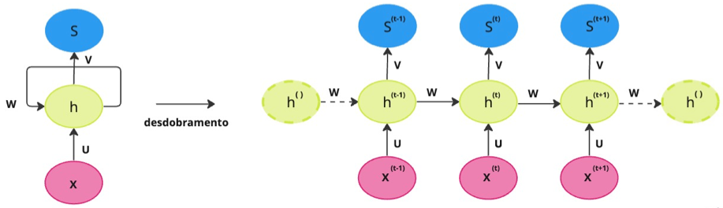
De forma abstrata, um modelo de linguagem baseado em redes recorrentes opera gerando uma palavra a partir de uma sequência de palavras anteriores, seguindo os passos abaixo:
- Calcula-se o vetor de embedding \(h_t^{0} = X_t\mathbf{E}\), onde \(\mathbf{E}\) é uma matriz de dimensão \(|V \times N|\), \(X_t\) é um vetor one-hot10 do tamanho do vocabulário, ou seja, \(|1 \times V|\) representando uma palavra, e \(t\) representa a t-ésima palavra da sequência sendo gerada
- Calcula-se a saída da camada escondida \(h_t^{1} = fn\left(\mathbf{W_h} \genfrac[]{0pt}{2}{h_t^{0}}{h_{t-1}^{1}} \right)\), onde \(\genfrac[]{0pt}{2}{h_t^{0}}{h_{t-1}^{1}}\) representa a concatenação dos vetores associados à saída da camada escondida fisicamente anterior (\(h_t^{0}\)) e da camada escondida do instante anterior (logicamente anterior) (\(h_{t-1}^{1}\)), \(\mathbf{W_h}\) é a matriz de pesos da camada escondida, e \(fn\) é uma função de ativação, por exemplo, a tangente hiperbólica. Este passo pode se repetir diversas vezes, dependendo de quantas camadas escondidas a rede tiver. O sobrescrito indica a camada da rede.
- Calcula-se a saída \(y_t = \mathbf{W_o}h_t^{1}\), onde \(\mathbf{W_o}\) representa a matriz de pesos da camada de saída.
- Calcula-se a distribuição de probabilidade \(p_t = \text{softmax}{y_t}\).
- Resgata-se a palavra com o maior valor de probabilidade na tabela one-hot.
- O processo continua até encontrar um token de fim de sequência, ou até alcançar uma saída máxima.
Pensando em uma geração token a token, é necessário ter algum token de início, que represente a camada anterior, para o primeiro token. Ele servirá para indicar a camada logicamente anterior usada, (\(h_{t-1}^{1}\)). As matrizes de pesos são os componentes aprendidos na rede. Para o aprendizado, pode-se considerar um conjunto de textos e fazer a tarefa de predição ser devolver a palavra correta na t-ésima posição, para t de 1 até um valor qualquer.
1.3.2.1.1 Embeddings from Language Models – ELMo
O ELMo é um modelo de linguagem que opera em uma rede neural recorrente 11 com várias camadas. Assim, cada camada pode ser usada para gerar uma representação contextualizada de um token. As camadas de redes recorrentes do ELMo olham para a frente e para trás na sentença (são chamadas de redes recorrentes bidirecionais), dando origem a duas representações, uma para cada direção. Então, cada token pode ter um conjunto de representações, mais precisamente \(2L+1\) representações, onde \(L\) é a quantidade de camadas da rede. A multiplicação por \(2\) é devido às duas direções. E de onde vem o \(1\)? É que o ELMo também inclui nesse conjunto de representações a entrada não contextualizada do token. Lembra que falamos antes que de todo modo os geradores de embeddings contextualizados devem iniciar por alguma representação vetorial? Mesmo os métodos que geram representações contextualizadas, precisam ter de onde começar. Então, o ELMo também inclui a representação “descontextualizada” \(e_{t_i}\), que é a representação de entrada do token, como uma possível representação. Ou seja, cada camada \(j \in \{1,2,\dots,L\}\) da rede produz as representações \(\text{emb}_{t_i,j} = (\overleftarrow{h}_{t_i,j}, \overrightarrow{h}_{t_i,j})\) para o token \(t_i\). Assim, o token terá um conjunto \(\text{emb}_{t_i} = (e_{t_i}, \{\overleftarrow{h}_{t_i,1}, \overrightarrow{h}_{t_i,1}, \dots, \overleftarrow{h}_{t_i,L}, \overrightarrow{h}_{t_i,L} \})\) de possíveis representações. A Figura 1.3 exibe um esquema da arquitetura do ELMo. O aprendizado de um modelo de linguagem baseado em redes recorrentes segue o algoritmo backpropagation through time (Werbos, 1990) a partir de um conjunto enorme de textos.
1.3.2.1.2 Utilização dos embeddings do ELMo
Mas como podemos usar esses embeddings para resolver uma tarefa? Por exemplo, suponha que a tarefa seja classificar uma publicação em uma rede social como sendo um comentário tóxico ou não12. Essa é uma tarefa de classificação. Uma forma de resolvê-la é treinar um classificador, que receberá um texto e informará se esse texto possui conteúdo tóxico ou não. Tanto para treinar o classificador como para usá-lo, a entrada textual precisa ser transformada para uma informação numérica, que é a língua que o computador entende. No caso que estamos falando aqui, a informação numérica será obtida justamente a partir dos embeddings. Com o ELMo, podemos obter esses embeddings de duas formas: (i) juntando todos os elementos acima em um único vetor, por exemplo, os somando, ou seguindo uma operação mais simples, (ii), por exemplo, selecionando somente aqueles que estão na última camada, ou seja, considerando somente \((\overleftarrow{h}_{t_i,L}, \overrightarrow{h}_{t_i,L})\). Mais precisamente, o embedding que o ELMo gera para um token é definido por \[emb'_{t_i} = \gamma^{\text{tarefa}} \overset{L}{\underset{j=0}\sum} \mathcal{S}^{\text{tarefa}}_j[\overleftarrow{h}_{t_i,j}; \overrightarrow{h}_{t_i,j}]\] onde variamos \(j\) de 0 até \(L\), para incluir o embedding da primeira camada (o descontextualizado), [_;_] indica uma operação de concatenação, \(\gamma^{\text{tarefa}}\) é um hiperparâmetro relacionado à tarefa, e \(\mathcal{S}^{\text{tarefa}}_j\) são os pesos da camada, normalizados por uma função Softmax13.
Observe que você pode experimentar outras variações. Por exemplo, podemos usar as camadas mais próximas da saída apenas, fazendo o somatório começar em \(j=k\), onde \(k\) é uma posição intermediária na rede. Também é possível concatenar o embedding descontextualizado com a saída da última camada.
1.3.2.1.3 Embeddings de sentenças
Até agora falamos de embeddings de tokens. Mas a maioria das tarefas considera entradas que são frases, ou um texto, ou seja, uma sequência de tokens. Na verdade, embora seja possível recuperar os embeddings de qualquer tipo de unidade de representação a partir do ELMo, incluindo caracteres, palavras, frases, textos, a saída default das implementações mais comuns14 são os embeddings de uma sentença. Eles são obtidos a partir de uma operação de amostragem por média (mean pooling) dos embeddings de tokens da última camada da rede, conforme discutimos antes. Perceba que isso é bem diferente do que a função simples que mencionamos antes, uma vez que as representações vetoriais passam por várias transformações matemáticas dentro da rede neural.
1.3.2.1.4 ELMo para português
Como usual, o modelo ELMo foi originalmente treinado e avaliado na língua inglesa. Mas existem versões deste modelo treinadas para as variantes brasileira e europeia do português (Rodrigues et al., 2020), disponibilizadas na biblioteca oficial do ELMo, a Allen NLP 15. O modelo foi treinado em tarefas de similaridade sintática e comparado com sucesso a representações estáticas também treinadas para o português.
1.3.2.2 Modelos de Linguagem baseados em Transformers
Embora as redes recorrentes possam resolver tarefas sequenciais e não demandem entradas de tamanho fixo, o que parece perfeito para tarefas de PLN, elas têm um grande problema: sua característica sequencial faz com que elas não sejam paralelizáveis, ou seja, uma rede recorrente não pode ser separada em vários componentes para serem treinados em paralelo. Tal característica torna o treinamento das redes recorrentes bem ineficiente, o que acarreta em um outro problema: as entradas não podem ser muito grandes e nem exigirem uma dependência de longa distância. Mesmo que as redes do tipo Long Short-Term Memory (LSTMs) tenham aliviado o problema da dependência de longa distância com o uso dos mecanismos de gate, eles acarretam em redes com mais parâmetros para serem treinados, o que de novo nos leva à questão da ineficiência.
Bem, esse é um problema para modelar línguas com redes neurais recorrentes, uma vez que um texto pode ser enorme e ainda assim trazer componentes importantes lá no início para serem usados lá no fim. Considere, por exemplo, a frase do Exemplo 1.4:
Exemplo 1.4
A garota de blusa amarela com uma frase em que os verbos estavam em letras pretas, que andava tão rápido e nunca em linha reta, a ponto de passar pelas nossas vistas como se fosse quase um furacão, tinha na parte de trás da sua blusa uma frase atribuída a Gandhi: “Acreditar em algo e não vivê-lo, é desonesto”.
Caso quiséssemos saber qual é a cor das letras em que a palavra “Acreditar” foi escrita, teríamos que conectar “Acreditar” com “verbo” e ver no início da frase que eles são escritos em preto. Claro que esse é um exemplo exagerado, mas pare para contar quantas palavras estão entre a cor da letra e o primeiro verbo da frase de Ghandi. Uma rede recorrente teria que aprender tais conexões, apesar da distância.
Outro ponto que precisamos mencionar antes de chegar aos Transformers (Vaswani et al., 2017) do título, que não são os mesmos dos filmes e brinquedos, mas que guardam muitas semelhanças, são as tarefas de PLN em que modelos de linguagem são costumeiramente usados: as tarefas de geração de sequências, no nosso caso, sequências de letras, palavras, textos. Tais sequências não são meramente concatenações de palavras, pois elas devem obedecer a princípios sintáticos e semânticos. Ainda, a geração de sequências não envolve apenas gerar textos do zero, ou completar frases, mas também gerar sequências a partir de outras sequências. Neste caso, a tarefa é chamada de forma genérica na literatura de sequence-to-sequence ou “seq2seq” (Cho et al., 2014; Sutskever et al., 2014). Por exemplo, as tarefas de tradução automática, sumarização, respostas a consultas complexas, entre outras, requerem que a entrada seja um texto (uma sequência) e que a saída também seja um texto (outra sequência).
Do ponto de vista da modelagem da arquitetura de uma rede neural para resolver tarefas “seq2seq”, o mais comum é considerar dois grandes componentes: o primeiro, chamado de encoder ou codificador, é responsável por processar a sequência de entrada – para nós a sequência de letras, tokens, palavras, frases, e codificá-la como um vetor de números (as redes neurais gostam de números), chamado de vetor de contexto; o segundo componente, chamado de decoder ou decodificador, é responsável por receber e processar o vetor de contexto e transformá-lo na sequência de saída – uma sequência de letras, tokens, palavras, frases. Veja um diagrama de alto nível deste processo na Figura 1.4, que exemplifica uma tarefa de tradução automática.
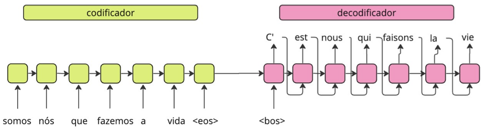
O codificador é uma rede neural – ou várias delas – e o mesmo vale para o decodificador. Logo, as redes neurais têm seus parâmetros aprendidos com o foco de receber uma sequência-fonte e devolver a sequência-alvo desejada. Outro ponto importante é que a rede precisa da representação numérica dos itens na sequência de entrada. Assim, ou podemos ter uma camada inicial que faz a transformação de um vetor one-hot para um vetor de embeddings, ou podemos recuperar os embeddings das palavras a partir de um modelo pré-treinado. A Figura 1.5 traz um exemplo da arquitetura anterior, detalhando a camada de embeddings.
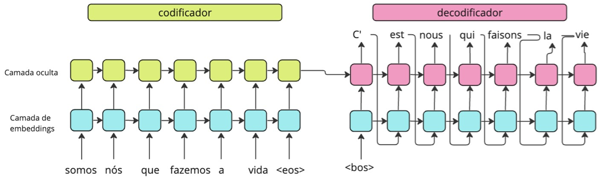
Bem, o codificador e o decodificador podem muito bem ser redes recorrentes, com uma ou mais camadas, do tipo LSTM, ou alguma outra variação. Em tais casos, o último estado escondido da rede, no sentido lógico, ou seja, obtido após processar o último item da sequência, será o vetor de contexto. A Figura 1.6 explicita o vetor de contexto, que antes estava representado de forma implícita como a seta de ligação entre o codificador e o decodificador.
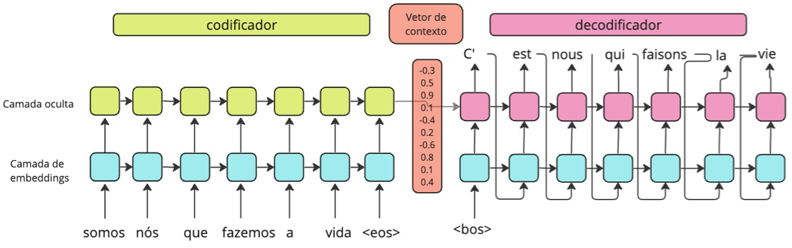
Aqui temos um problema: é complicado assumir que esse último estado escondido, codificado como o vetor de contexto, conseguirá capturar todos os aspectos necessários para resolver a tarefa, ainda mais se a sequência de entrada for grande. Para lidar com este problema, pesquisadores elaboraram uma nova estratégia, chamada de mecanismo de atenção16 (Bahdanau et al., 2015; Luong et al., 2015).
1.3.2.2.1 Atenção!
O objetivo do mecanismo de atenção – na verdade, um conjunto adicional de parâmetros para a rede – é que os itens mais relevantes da entrada recebam uma valoração maior no vetor de contexto. Mas outros itens também podem receber algum valor. A ideia é mais ou menos assim, e deixe de lado a língua natural só por um minuto, para um exemplo mais abstrato: suponha que você quer aprender a assar um bolo de chocolate. Vamos chamar “Assar o bolo de chocolate” de consulta. Você pode pegar o livro de receitas da sua avó para te ajudar. O livro é composto de diversas receitas, que vamos chamar de chaves. O que você quer é encontrar a receita mais adequada, e para isso, todas as receitas vão receber alguma valoração. A receita do bolo de chocolate perfeito deve ter um valor maior em relação aos demais, mas uma receita de bolo de chocolate com morango, também pode receber alguma relevância. Mas uma receita de Tiramissu deveria ter uma relevância bem pequenininha. O mecanismo de atenção segue essa ideia: a saída é a consulta, a informação que precisa ser gerada a partir da entrada, as chaves. Para definir a chave mais relevante, são calculados pesos de atenção, que definirão o vetor de contexto.
Para considerar a relevância de diferentes itens na entrada, o codificador não considera que apenas o último estado escondido da rede será o vetor de contexto, mas que todos os estados escondidos, ou seja, todos os estados obtidos após o processamento de cada item da sequência, também podem participar do vetor de contexto. Mas agora o decodificador terá mais trabalho, pois ele precisará decidir o que fazer com esses vários vetores antes de gerar os itens da saída, e ainda considerando que é necessário focar nas partes mais relevantes para a resolução da tarefa. Assim, antes de gerar a saída pelo decodificador, são executados os seguintes passos:
- Computar uma pontuação para cada estado escondido, também chamada de pontuação de alinhamento, seguindo a Equação 1.4.
- Passar as pontuações combinadas – por concatenação, em geral, ou o vetor resultante da equação anterior, pensando em termos de representações matriciais – por uma função de “softmax”, para capturar alguma noção de probabilidade da relevância, produzindo os pesos de atenção.
- Multiplicar cada estado escondido (lembrando que ele é representando por um vetor) pelos pesos de atenção, de forma a tornar os estados escondidos mais relevantes com valores ainda maiores, e obter o efeito oposto para os estados menos relevantes. O resultado deste passo será o vetor de contexto.
\[ att = \mathbf{W}_{\text{combinado}} \times \tanh(\mathbf{W}_{\text{decod}} \times \mathbf{H}_{\text{decod}} + \mathbf{W}_{\text{codif}} \times \mathbf{H}_{\text{codif}}) \tag{1.4}\]
onde \(\mathbf{W}_{\text{codif}}\) e \(\mathbf{W}_{\text{decod}}\) representam matrizes de pesos (parâmetros) aprendidos e \(\mathbf{H}_{\text{decod}}\) representam estados escondidos. Observe a semelhança com uma rede neural de uma camada escondida com a função de ativação de tangente hiperbólica. Veja um exemplo ilustrativo na Figura 1.7.
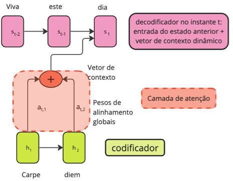
Fonte: Adaptado de (Bahdanau et al., 2015)
O mecanismo de atenção calculado desta forma também é chamado de mecanismo aditivo ou mecanismo de Bahdanau, proposto em Bahdanau et al. (2015). Existe um segundo tipo de atenção, proposto em (Luong et al., 2015), chamado de mecanismo de atenção multiplicativo. As diferenças principais são que o decodificador produz um estado intermediário a partir do estado escondido anterior antes de calcular os pesos de atenção, e as pontuações de alinhamento podem ser de três tipos: (i) multiplicando os estados escondidos do codificador e decodificador apenas, ou seja, \(att = \mathbf{H}_{decod} \times \mathbf{H}_{codif}\), (ii) multiplicando uma matriz de pesos aprendidos ao resultado da multiplicação em (i), ou seja, \(att = \mathbf{W} \times \mathbf{H}_{decod} \times \mathbf{H}_{codif}\), e (iii) somando os estados escondidos do codificador e decodificador, que são multiplicados por uma matriz de pesos, passam pela função de ativação da tangente hiperbólica e são finalmente multiplicadas a uma matriz de pesos, \(att = \mathbf{W} \times tanh(\mathbf{W}_{combinado}(\mathbf{H}_{decod} + \mathbf{H}_{codif}))\). Este último caso é o mais similar ao mecanismo aditivo, mas os estados escondidos compartilham uma matriz de pesos, diferente da Equação 1.4. Ao final, o vetor de contexto é concatenado com o estado do decodificador no instante anterior, para produzir uma nova saída.
O mecanismo de atenção apresentado até agora é chamado de mecanismo de atenção geral, uma vez que ele tenta encontrar os componentes da entrada que são mais relevantes para gerar a saída. Transformers fazem uso de um mecanismo de atenção adicional, chamado de auto-atenção, em que a captura da relevância é feita entre os elementos de uma mesma sequência, usualmente da entrada.
1.3.2.2.2 Finalmente os Transformers
Mas vamos finalmente entender o que são esses tais Transformers, uma arquitetura de rede neural proposta em 2017 e que faz uso do mecanismo de atenção, entre outros componentes conhecidos de redes neurais, e cujo esquema está representado na Figura 1.9. Um Transformer tem dois componentes principais, adivinhem só, um componente de codificação e um componente de decodificação. Entretanto, diferente do que falamos antes nos modelos seq2seq, Transformers não são constituídos por redes neurais recorrentes. Com isso, é possível paralelizá-los e alcançar tempos de treinamento mais eficientes para modelos de linguagem do que usando redes recorrentes. Mas não é só isso: o uso extensivo de mecanismos de atenção, combinados a outros componentes, fez dos Transformers e suas diversas variações o estado da arte em diversas tarefas de PLN, ao menos até o momento de escrita deste livro (Wolf et al., 2020). Eles são o componente principal dos modelos de linguagem em larga escala (em inglês, large language models ou LLMs) que deram o que falar no início do ano de 2023, principalmente com a vasta disponibilidade de agentes de conversação e suas interfaces de programação de aplicações17.
Vamos entender do que esses codificadores e decodificadores são compostos, já que não são redes recorrentes. O codificador é, na verdade, uma pilha de sub-codificadores, enquanto o decodificador é uma pilha de sub-decodificadores. No artigo original, essas pilhas tinham seis componentes, mas poderia ser qualquer outra quantidade. Os sub-codificadores possuem estruturas idênticas e são constituídos de dois outros componentes: um mecanismo de auto-atenção e uma rede neural completamente conectada de uma camada.
Antes de explorar os demais componentes, vamos observar como funciona o mecanismo de auto-atenção. Considere que cada item da sequência (um token, uma palavra) é representado por um embedding. Como antes, o vetor de embedding pode ter sido pré-treinado. Considerando o ponto de entrada de um transformer como sendo o tal vetor de embeddings, são criados três vetores a partir de cada palavra ou token. A implementação é toda matricial, para fazer bom uso das GPUs, mas podemos abstrair para vetores, para facilitar o entendimento. Vamos então considerar que temos a frase viva este dia. Transformers fazem uso de tokens de subpalavras, para aliviar o problema das palavras que estariam fora de um vocabulário pré-treinado, conforme apresentado no Capítulo Sequência de caracteres e palavras. Mas, para simplificar, vamos assumir que cada palavra é um token. Temos então três tokens na frase, que serão representados pelos vetores \(x_1\) – viva, \(x_2\) – este, e \(x_3\) – dia, que são os embeddings de cada palavra. A partir de cada um deles, criamos três outros vetores, \(q\), \(k\) e \(v\), de query (consulta), keys (chaves) e values (valores)18, respectivamente (lembra do exemplo do bolo?). O vetor \(q\) se refere a um item de interesse que está sendo codificado. O vetor \(k\) se refere aos demais itens da sentença. O vetor \(v\) representa a codificação do valor dado a cada item, considerando o item de interesse. Para o nosso exemplo, temos então, os vetores \(q_1\), \(k_1\) e \(v_1\) para a palavra “viva”, \(q_2\), \(k_2\) e \(v_2\) para a palavra “este” e \(q_3\), \(k_3\) e \(v_3\) para a palavra “dia”.
Como os vetores são obtidos? Como é de praxe com redes neurais, usando matrizes de pesos aprendidas com os dados. Assim, multiplicando o vetor \(x_1\) pela matriz de pesos associadas às queries, \(\mathbf{W}_Q\), temos o vetor \(q_1\). O mesmo vale para os demais itens, ou seja, para obter o vetor \(k_1\), multiplicamos \(x_1\) por uma outra matriz de pesos \(\mathbf{W}_k\), e para obter \(v_1\), multiplicamos \(x_1\) por uma outra matriz de pesos \(\mathbf{W}_v\). Vamos agora calcular o peso de atenção, para, dada uma palavra que está fazendo às vezes de query, identificarmos quais são as keys mais relevantes para produzir o vetor de valoração. Observe que essa intuição está inserida nas matrizes de peso aprendidas. Então, assumindo inicialmente que a query é a palavra “viva”, multiplicamos seu vetor \(q_1\) por cada uma das keys, \(k_1\), \(k_2\) e \(k_3\). Observe que depois o mesmo será feito para as demais palavras. Os valores multiplicados são divididos por 8 19. A seguir, como antes, os valores passam por uma função de softmax, para que eles sejam transformados em probabilidades. A soma de todas as probabilidades vai ser sempre igual a um. Ou seja, ficamos com a ideia de que cada key é mais ou menos importante para cada palavra query, de acordo com o valor computado pela softmax. Agora aparecem os vetores de valoração. Os valores calculados pelo softmax são multiplicados por cada um dos vetores de values, para codificar a importância das demais palavras na valoração. Finalmente, esses valores são somados, produzindo um valor final, chamado de \(z_1\) para a primeira palavra, que será passado adiante para a rede neural completamente conectada. Veja um esquema do processo para a primeira palavra na Figura 1.8.
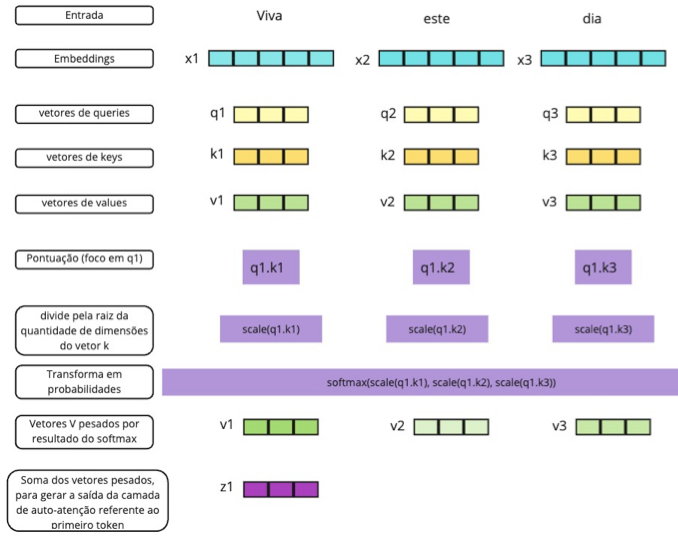
Fonte: Adaptado de http://jalammar.github.io/illustrated-transformer/
1.3.2.2.3 Atenção em múltiplas versões
A linguagem é sujeita a várias complexidades que podem fazer o mecanismo de atenção não ser suficiente para representá-las. Dependendo da sentença de entrada, podemos ter variações na atenção. Isso é bem comum em problemas de correferência. Por exemplo, na frase “Eles não levaram os livros nos compartimentos porque eles eram muito pequenos”, o segundo “eles” pode se referir a vários outros pronomes e substantivos na frase. Ainda, dependendo do contexto, as palavras podem ter vários significados, um conceito chamado de polissemia. Então, para capturar diferentes representações de uma palavra, bem como diferentes interações da palavra com os demais componentes, Transformers incluem um nível de paralelismo no processamento da entrada, a partir de um componente adicional chamado de multi-heads attention. No artigo original, os Transformers incluem oito versões paralelas do mecanismo de atenção, fazendo com que tenhamos oito vezes três matrizes de keys, values, queries inicializadas aleatoriamente, o que permite que tais matrizes capturem diferentes aspectos da entrada.
Lembre que o mecanismo de atenção produz uma matriz final \(Z\) após processar a entrada a partir das diferentes matrizes de peso \(Q\), \(K\), \(V\). Anteriormente, falamos que o resultado do passo de atenção é submetido a uma rede neural completamente conectada. Para que a rede completamente conectada consiga lidar com as várias matrizes \(Z\) geradas em paralelo, elas são concatenadas e multiplicadas por uma outra matriz de pesos adicional, gerando, finalmente, uma única matriz \(Z\) que representa o resultado do mecanismo de atenção em suas várias versões. Como essa matriz de pesos adicional também é aprendida, Transformers dão a chance de alguma das versões do mecanismo de atenção paralelo ter mais ou menos relevância que algum outro, dependendo dos dados de treinamento.
Mas quantas matrizes são treinadas, não é mesmo? Pare um momento para fazer uma conta de quantos pesos um Transformer precisa treinar, considerando os componentes que apresentamos até aqui. O que isso pode fazer com o meio ambiente, se um décimo das pessoas do planeta resolvessem treinar seu próprio Transformer?
1.3.2.2.4 E as posições das palavras??
Duas motivações foram apresentadas para construir modelos de linguagem a partir de redes recorrentes: (i) permitir entradas de tamanho variável e (ii) permitir que o aprendizado tenha acesso à ordem das palavras e absorva a diferença que vem de ordens distintas, bem como a importância da ordem para tarefas sintáticas e semânticas. A recorrência é o mecanismo utilizado para atender a estas duas motivações no ELMo, por exemplo. Mas Transformers não incluem nada de recorrência. E agora?
A bem da verdade, para permitir o treinamento de forma eficiente, as implementações das redes recorrentes já não deixavam a entrada ser tão variável assim. Para que os tensores sejam formados e manipulados de forma eficiente, é comum que algumas implementações preencham frases com símbolos nulos e organizem frases que tenham o tamanho mais aproximado o possível, para que eles fiquem nos mesmos lotes e ajudem na manipulação dos tensores. De certa forma, Transformers possuem uma entrada de tamanho pré-definido. O tamanho pré-definido, em geral, é até bem menor do que gostaríamos para manipular textos um pouco mais longos, por questões de desempenho. Na Seção Tendências falaremos de como este problema tem sido abordado. Mas é possível lidar com sentenças de tamanhos distintos nos Transformers, adotando alguma das abordagens abaixo:
- Quando a sentença de entrada tem menos tokens que a quantidade de tokens de entrada esperada pelo modelo: esse é o caso mais fácil, quando a sentença é preenchida com valores nulos, um processo chamado de padding.
- Quando a sentença de entrada tem mais tokens que a quantidade de tokens de entrada esperada pelo modelo: duas soluções podem ser adotadas. A mais simples é truncar a entrada, removendo elementos do início ou do fim da sentença. Outra forma mais elaborada é quebrar a sentença em janelas com elementos sobressalentes entre elas e passar esses pedaços ou janelas várias vezes no modelo.
O outro problema, a ordem das palavras, exige a inclusão de um componente adicional no modelo, uma vez que a ordem é de extrema relevância para a sintaxe e a semântica, e portanto também para modelos que tentam aprender a resolver tarefas sintáticas ou semânticas. Assim, Transformers incluem um tipo especial de embedding, chamado de codificador de posição (positional encoding), para contemplar alguma informação sobre as posições dos tokens durante o aprendizado. O codificador posicional é um vetor a mais somado ao vetor de embeddings de entrada de cada token. Embora, em um primeiro pensamento, possa parecer mais direto considerar um valor simples de posição, como por exemplo, um índice, essa abordagem traria alguns problemas. O primeiro é que o valor pode ficar muito grande, dependendo de quantas palavras temos, e o modelo poderia se confundir achando que esses valores altos têm alguma importância. Mesmo se o valor fosse normalizado entre 0 e 1, diferentes tamanhos de sentenças trariam diferentes valores, o que também atrapalharia a generalização do aprendizado.
Assim, o codificador de posição define um vetor de valores contínuos do mesmo tamanho do embedding de entrada do token, para que seja possível somá-los. Para incorporar mais uma ideia de distância entre as palavras, ou de posição relativa, do que uma ideia rígida de posição, o vetor é obtido a partir de uma função que intercala entre a aplicação de seno ou cosseno. Mais precisamente, para codificar a informação de posição de um token que está em uma posição \(k\) na sequência de entrada, considerando cada posição \(i\) do vetor posicional, fazemos:
\[\begin{aligned} p(k,2i) = \sin \left( \frac{k}{n^{\frac{2i}{d}}} \right) & p(k,2i+1) = \cos \left( \frac{k}{n^{\frac{2i}{d}}} \right) \end{aligned}\]
onde \(d\) é a dimensão do vetor posicional e \(n\) é um valor pré-definido20. Para posições pares do vetor de saída, aplica-se o seno e para posições ímpares, aplica-se o cosseno. A Tabela 1.1 apresenta um exemplo simplificado da aplicação do codificador posicional21.
| Token | índice na sentença | i=0 | i=1 | i=2 | i=3 |
|---|---|---|---|---|---|
| viva | 0 | 0 | 1 | 0 | 1 |
| este | 1 | 0,8415 | 0,5403 | 0,3109 | 0,9504 |
| dia | 2 | 0,9093 | -0,4161 | 0,5911 | 0,8607 |
1.3.2.2.5 Mecanismo residual e normalização
O último subcomponente dos Transformers que precisamos falar é a inclusão de duas conexões residuais (He et al., 2016) dentro da subcamada de codificação. A conexão residual surgiu na área de visão computacional, com a motivação que redes neurais com muitas camadas podem esquecer uma informação importante de entrada após ela passar por muitos processamentos. Em geral, esse esquecimento se dá pelo problema do gradiente que vira zero, depois de muitas multiplicações de valores menores que um (Hochreiter, 1991) durante o backpropagation22. A conexão residual justamente evita parte dessas transformações multiplicativas, pulando algumas delas.
No caso dos Transformers, além de evitar que o treinamento se perca com multiplicações de valores muito pequenos, a motivação é que os embeddings de representação de palavras também continuem a ser aproveitados de alguma forma, trazendo uma ideia de representação local dos tokens para a subcamada de codificação. Ou seja, ao permitir que a informação sem ser processada pela camada de auto-atenção e que a informação sem ser processada pela camada completamente conectada sejam consideradas, é como se a rede estivesse lembrando da representação original do token, quando necessário. Para tanto, a saída da camada de auto-atenção é somada com a entrada original, que por sua vez é somada com a saída da camada completamente conectada, preservando, e repassando para a frente de alguma forma, a entrada original.
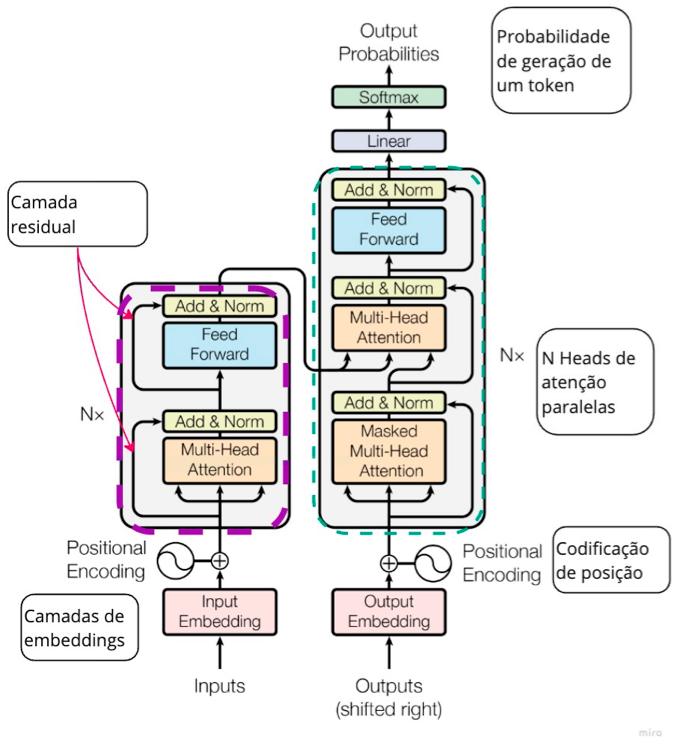
Fonte: Modificado a partir de (Vaswani et al., 2017).
A arquitetura Transformer original possui em seu componente de codificação seis subcamadas de codificadores, com as camadas internas completamente conectadas tendo 512 neurônios artificiais intermediários (na camada oculta, ou escondida) e oito heads de atenção.
Só mais um detalhe para fecharmos o nível interno de uma camada de codificação: para ajudar no aprendizado dos gradientes, antes da camada de atenção e antes da camada completamente conectada, temos uma camada de normalização. Na verdade, tem uma pequena confusão com essa camada. A figura original dos Transformers (Figura 1.9) aponta que a normalização acontece após o processamento da camada de atenção e após o processamento da camada completamente conectada (pós-normalização). Entretanto, no código original está diferente23: na verdade, no código temos uma pré-normalização, que ocorre antes do cálculo dos valores de atenção. Argumenta-se que isto ajuda a lidar melhor com os gradientes (Xiong et al., 2020). Mas esta discussão, de onde inserir a camada de normalização, e onde ela apresenta mais vantagens, ainda é um ponto de investigação em aberto.
1.3.2.2.6 Decodificador e comunicação entre codificador e decodificador
A arquitetura do componente Decodificador é bastante parecida com a arquitetura do Codificador. Ambas são uma pilha de sub-camadas, com cada sub-camada incluindo uma camada de auto-atenção, de normalização, um componente residual e uma camada de rede completamente conectada. Porém, aqui temos um componente a mais, que é uma camada de atenção convencional, que se comunica com o Codificador. Assim, após o processo de codificação, as matrizes de atenção \(K\) e \(V\) serão a entrada para a camada de atenção convencional do decodificador. Já a matriz \(Q\) vem mesmo da camada anterior, justamente para que essa camada ajude o modelo a decidir o que ele precisa considerar para gerar a saída.
Uma outra diferença é que a camada de auto-atenção do decodificar é chamada de mascarada, uma vez que ela não tem acesso aos tokens que estão em uma posição posterior a um certo token. Assim, no decodificador, considerando o processamento de um token \(t_i\), a camada de auto-atenção do decodificador só terá acesso aos tokens \(\{t_0, t_1, \dots, t_{i-1}\}\) para calcular o valor da auto-atenção. Este comportamento tem a ver com o que se espera de um decodificador: que ele gere um próximo token, dados os tokens anteriores a ele, mas sem saber o futuro de antemão. Assim, o decodificador lembra muito o processo do modelo probabilístico que discutimos antes: (1) o processamento parte dos tokens “anteriores”, que inicialmente é apenas um token especial de início de sentença; a entrada do decodificador considera esses tokens anteriores e a camada de atenção convencional considera as matrizes geradas pelo codificador; (2) um token é gerado pelo modelo; (3) o processo se repete.
Entretanto, nos modelos probabilísticos, fica clara a existência das probabilidades, enquanto até agora só falamos em vetores. Transformers incluem uma última camada de rede neural, justamente para resolver tal discrepância. Assim, a última camada da arquitetura recebe a saída do decodificar (um vetor) e a processa com uma camada linear completamente conectada. A saída da camada linear completamente conectada é um vetor de logits24 do tamanho do vocabulário, que representam uma pontuação associada a cada palavra do vocabulário. Finalmente, tais valores de pontuação passam por uma operação de softmax, para converter esses valores reais em valores que fiquem entre 0 e 1, representando a probabilidade de que o decodificador emita cada uma das palavras do vocabulário.
1.3.2.2.7 Arquiteturas que instanciam Transformers
Tarefas que lidam com linguagem têm sido abordadas por diferentes instanciações de Transformers: podemos considerar a arquitetura completa, podemos considerar apenas o componente codificador, ou podemos considerar apenas o componente decodificador. Ainda, é possível não usar todas as camadas existentes no modelo original, mas subconjuntos (ou até mesmo superconjuntos) delas.
1.3.2.2.8 Codificador: BERT e seus amigos
A arquitetura mais utilizada que considera apenas o componente codificador chama-se BERT25, de Bidirectional Encoder Representations for Transformers (Devlin et al., 2019). O BERT foi treinado em duas versões, uma chamada base e outra chamada large. A versão base possui 12 subcamadas de codificação, que por sua vez incluem camadas completamente conectadas com 768 unidades de neurônios artificiais intermediários e 12 heads de atenção. A versão large é composta de 24 subcamadas de codificadores, com suas camadas completamente intermediárias tendo 1024 neurônios artificiais intermediários e as camadas de atenção com 16 heads.
Em ambas as arquiteturas, a entrada para o BERT tem uma limitação de 512 tokens, devido, principalmente, ao processamento quadrático do mecanismo de atenção, que considera todos os tokens para cada token em seus cálculos. O primeiro token é um especial chamado de [CLS], cujo uso ficará mais claro quando falarmos do processo de treinamento e inferência com modelos de linguagem. O BERT também pode receber duas sentenças (também ficará mais claro daqui a pouco), e nesse caso elas são separadas com um outro token especial chamado [SEP]. Para cada token da entrada, o BERT produz um vetor de saída de 768 ou 1024 posições, dependendo da configuração base ou large. A saída completa de um modelo BERT é um tensor de quatro dimensões, com a primeira representando a quantidade de subcamadas de codificação (12) mais a camada dos embeddings de entrada, totalizando 13, a segunda representando a quantidade de lotes (voltaremos nele ao falar do treinamento), a terceira a quantidade de tokens na entrada, e a quarta o tamanho da camada escondida. Veja um exemplo abaixo, onde a quantidade de tokens é 26 devido ao processo de tokenização em subtokens (na verdade, são 24 tokens, pois o primeiro e o último são os tokens especiais, [CLS] e [SEP]). O código do exemplo segue o framework HuggingFace (Wolf et al., 2020).
import torch
# carregando os módulos do framework HuggingFace
from transformers import AutoTokenizer, AutoModel
# carregando o tokenizador
tokenizer = AutoTokenizer.from_pretrained("bert-base-uncased")
# carregando o modelo BERT BASE
model = AutoModel.from_pretrained("bert-base-uncased")
# frase de Epicteto, um filósofo estoico
s = "a riqueza não consiste em ter grandes posses, mas em ter poucas
necessidades"
# frase tokenizada
input_sentence = torch.tensor(tokenizer.encode(s)).unsqueeze(0)
# saída do modelo
# output_hidden_states=True faz com que tenhamos acesso a todas as
camadas na posição 2 da variável de saída
out = model(input_sentence,output_hidden_states=True)
print("Numero de camadas: ", len(out[2]))
print("Numero de lotes: ", len(out[2][0]))
print("Numero de tokens: ", len(out[2][0][0]))
print("Numero de neurônios artificiais: ", len(out[2][0][0][0]))
Numero de camadas: 13
Numero de lotes: 1
Numero de tokens: 26
Numero de neurônios artificiais: 768Por curiosidade, os tokens gerados são como seguem abaixo. Observe que os espaços não são tokens, mas estão aqui apenas para conseguirmos separar um token de outro.
a ri ##que ##za [UNK] consist ##e em ter grande ##s posse ##s , mas
em ter po ##uca ##s nec ##ess ##idad ##esonde as duas tralhas indicam que o token é, originalmente, parte de uma palavra e [UNK] é um token para indicar que não foi possível encontrar aquele componente no vocabulário. No caso acima, provavelmente é devido à presença de uma palavra com til, o que não existe na língua inglesa.
Um modelo de linguagem segue um vocabulário e o vocabulário do BERT original segue a língua inglesa. Embora o processo de tokenização em subpalavras consiga identificar algumas palavras, toda a definição dos pesos durante o processo de aprendizado será feito com base em um vocabulário de um idioma distinto. E quando falamos de uma língua, não é apenas o vocabulário que é relevante, mas as regras sintáticas, seus significados, e até mesmo características culturais e da sociedade.
Então, temos duas opções: ou considerar um modelo que tenha se deparado com um vocabulário de vários idiomas, ou treinar um modelo separado para uma língua. Para o primeiro caso, temos, por exemplo, o modelo BERT multilingual (chamado de mBERT), treinado com textos da Wikipedia de 104 idiomas. Com o mesmo teste feito antes, teríamos agora 18 tokens, ao invés de 26, mostrando que, ao menos, mais palavras são reconhecidas. Em particular, usando o mBERT, o processo de tokenização devolve
a riqueza não consiste em ter grandes posse ##s , mas em ter poucas
necessidade ##sPara o segundo caso, temos alguns modelos treinados especificamente para o português (outras línguas também, mas nosso interesse aqui é na nossa linda língua materna). O modelo BERTPT (Feijó; Moreira, 2020) foi treinado com um vocabulário de tamanho 30.000, assim como o modelo BERT original, porém mantendo a configuração original de maiúsculas e minúsculas e sinais diacríticos (os acentos). Foram usados 4,8GB de textos, considerando textos em português do Brasil e europeu, tanto mais formais, como Wikipedia-PT26 e EuroParl27, como textos mais informais, como Open Subtitles28. No total, foram considerados 992 milhões de tokens. A arquitetura utilizada foi a base. O modelo BERTPT apresentou resultados melhores em bases de dados compostas por textos mais informais.
O modelo BERTimbau29 (Souza et al., 2020) também partiu da arquitetura do BERT, mas treinou duas versões, uma a partir da arquitetura base e outra a partir da arquitetura large. Assim como no BERTPT, são mantidas as letras maiúsculas e minúsculas e acentos e o tamanho do vocabulário também é de 30.000 tokens. O conjunto de textos usados para treinar os modelos foi o brWaC (Wagner Filho et al., 2018), que é composto de textos em português do Brasil, contendo 2,68 bilhões de tokens e 3,53 milhões de documentos, e após uma fase de pré-processamento ficou com 17,5GB de textos. Outra diferença em relação ao BERTPT é que a tokenização utilizou o algoritmo BPE, enquanto o BERTPT e o BERT original seguem o algoritmo WordPiece, ambos mencionados no Capítulo Sequência de caracteres e palavras. Apenas para fins de comparação com o exemplo anterior, abaixo temos o resultado da tokenização usando o tokenizador do BERTimbau, que fica com um token a menos que o mBERT. O resultado foi gerado com a versão disponibilizada no hub de modelos HuggingFace30 (Wolf et al., 2020). Na maioria dos resultados apontados no artigo, o BERTimbau supera o mBERT.
a riqueza não consiste em ter grandes posse ##s , mas em ter poucas
necessidadesO último modelo para português baseado no BERT que citaremos aqui é o Albertina (Rodrigues et al., 2023), treinado em duas variantes, português europeu (Albertina PT-PT) e português do Brasil (Albertina PT-BR). A versão PT-BR também foi treinada com o brWaC. Já a versão PT-PT foi treinada com um subconjunto de textos em português extraídos da versão de Janeiro de 2023 do corpus Oscar (Abadji et al., 2022) e de outros três corpora constituídos de documentos do parlamento europeu e português. No total, foram utilizados oito milhões de documentos contendo 2,2 bilhões de tokens.
Uma diferença crucial do Albertina para os modelos anteriores é que a arquitetura base não é a do BERT, mas sim uma versão estendida com duas novas técnicas, chamada DeBERTa (do inglês, Decoding enhanced BERT with disentangled attention) (He et al., 2021). A primeira modificação diz respeito ao mecanismo de atenção. Lembre que nos Transformers, um token é representado pela soma do seu vetor inicial de embeddings e do seu vetor de codificação de posição. No DeBERTa, e consequentemente no Albertina, temos dois vetores que são processados separadamente (daí o disentangled, ou desemaranhado em português), onde o vetor de codificação de posição representa a posição relativa de um token \(i\) em relação a um token \(j\). O valor de atenção cruzada de dois tokens é calculado como \(A_{i,j} = \{\mathbf{H_i}, \mathbf{P_{i|j}}\} \times \{\mathbf{H_j}, \mathbf{P_{j|i}}\}^{\intercal}\), onde \(\mathbf{H_i}\) representa o vetor de embeddings do token \(i\) e \(\mathbf{P_{i|j}}\) representa a posição relativa do token \(i\) em relação ao token \(j\). A outra modificação tem a ver com a tarefa de treinamento genérica das arquiteturas Transformers e voltaremos nela na seção seguinte.
Para não perder o costume, veja abaixo o resultado do processo de tokenização usando a versão PT-BR disponibilizada no HuggingFace31. Observe que a representação é diferente das anteriores: cada token que é o início de uma palavra recebe um ‘_’ como prefixo. O tokenizador também tem a diferença de tratar espaços somo se eles fossem parte do token.
_a _ rique za _não _consist e _em _ter _grande s _posses , _mas _em
_ter _pou cas _necess idades Também temos alguns modelos BERT treinados para tweets em português32. Certamente, existem vários outros modelos treinados para o português que não apareceram aqui. Observem que esta não é para ser mesmo uma lista exaustiva.
Existem diversas outras arquiteturas que estendem, melhoram, modificam, ou treinam com mais dados ou com outros parâmetros o componente codificador dos Transformers. Exemplos incluem ROBERTa (Liu et al., 2019), que incluiu modificações no treinamento e usa o algoritmo de tokenização BPE ao invés do WordPiece; DistillBERT (Sanh et al., 2019), que se vale de um processo de destilação de conhecimento para aproximar os pesos do modelo original e obter um modelo menor que o BERT; AlBERT (Lan et al., 2020), que introduz três mecanismos – fatorização das matrizes de embeddings, compartilhamento de pesos e uma nova forma de treinamento – para obter um modelo mais eficiente que o BERT; ELECTRA (Clark et al., 2020), que também muda a forma de treinamento do BERT para obter embeddings melhores com um processo mais eficiente; dentre muitos outros.
1.3.2.2.9 Decodificador: GPT e seus vizinhos
A saída do codificador em um modelo Transformer é uma representação vetorial, que para resolver uma tarefa final ainda precisa passar por algum outro processo. Mas essa representação pode ser bem robusta, uma vez que ela olha ambos os lados direito e esquerdo de um token ao construir sua representação vetorial. Já o componente decodificador tem uma característica autorregressiva, e a sua saída pode ser mesmo um texto, mas cada token só pode olhar para aqueles que vieram antes dele na sequência. Como falamos antes, esse componente é o que remonta de fato ao propósito original de um modelo de linguagem computacional: gerar o próximo token, dados os tokens anteriores a ele, ou seja, gerar um texto. A família de arquiteturas GPT (Radford; Narasimhan, 2018) (do inglês, Generative Pre-trained Transformer, ou Transformer Gerativo Pré-treinado) usa blocos decodificadores da arquitetura Transformer para funcionar como um modelo autorregressivo de geração de texto. Claramente, sem o componente codificador, não temos o mecanismo de atenção tradicional como parte das entradas do decodificador, como acontece na arquitetura Transformer.
Em sua primeira versão, o GPT era bem similar ao componente decodificador do Transformer, sendo composto de 12 subcamadas de decodificadores com 12 heads de auto-atenção mascaradas de dimensão 768, e camadas escondidas completamente conectadas de 3072 dimensões. A tokenização também é baseada em subpalavras, mas segue o algoritmo BPE ao invés do WordPiece, como o BERT. A segunda versão, chamada criativamente de GPT-2 (Radford et al., 2019) veio em quatro versões de tamanhos variados: GPT-2 small, com 12 subcamadas de decodificadores e dimensão dos embeddings de 768, a versão GPT-2 medium, com 24 subcamadas de decodificadores e dimensão dos embeddings de 1024, a versão GPT-2 large, com 36 subcamadas de decodificadores e dimensão dos embeddings de 1280, e a versão GPT-2 extra large, com 48 subcamadas de decodificadores e dimensão dos embeddings de 1600. A camada de normalização passou a estar na entrada de cada subcamada e adicionou-se uma outra camada de normalização após o último bloco de auto-atenção. O código a seguir, que também usa o HugginFace, apresenta exemplos de geração de texto usando o GPT2.
# modelo multilingual
model_name = "sberbank-ai/mGPT"
tokenizer = GPT2Tokenizer.from_pretrained(model_name)
model = GPT2LMHeadModel.from_pretrained(model_name)
model.cuda()
model.eval()
# geração de texto default
def cond_gen(tokenizer, model, prefix):
# encode context the generation is conditioned on
input_ids = tokenizer.encode(prefix, return_tensors='pt').cuda()
# generate text until the output length (which includes the context
# length reaches 50)
greedy_output = model.generate(input_ids, max_length=50)
return list(map(tokenizer.decode, greedy_output))[0]
# imprimir a saída do modelo
def print_output(output):
print("Output:\n" + 100 * '-')
print(output)
# usando beam search
def cond_gen_beam(tokenizer, model, prefix, ngram=1):
input_ids = tokenizer.encode(prefix, return_tensors='tf')
beam_output = model.generate(
input_ids,
max_length=50,
num_beams=5,
no_repeat_ngram_size=ngram,
early_stopping=True
)
return beam_output[0]
# usando top-k sampling
def cond_gen_sample(tokenizer, model, prefix):
input_ids = tokenizer.encode(prefix, return_tensors='tf')
sample_output = model.generate(
input_ids,
do_sample=True,
max_length=50,
top_k=0
)
return sample_output[0]
# manipulando o parâmetro de temperatura
def cond_gen_sample_temp(tokenizer, model, prefix, temp=0.5):
input_ids = tokenizer.encode(prefix, return_tensors='tf')
sample_output = model.generate(
input_ids,
do_sample=True,
max_length=50,
top_k=0,
temperature=temp
)
return sample_output[0]
prefix = 'Eu gosto de'
output = cond_gen(tokenizer_pt, model_pt, prefix)
print_output(output)
Output:
--------------------------------------------------------------------
Eu gosto de fazer o que gosto, mas não sou muito de fazer o que não
gosto.
output = cond_gen_beam(tokenizer, model, prefix)
print_output(output)
Output:
--------------------------------------------------------------------
Eu gosto de pensar que a vida é muito curta, mas eu não posso viver
sem ela.
Não importa o quanto você se preocupe com as coisas boas e ruins do
mundo; ninguém pode ser fel
output = cond_gen_sample_temp(tokenizer, model, prefix, 0.7)
print_output(output)
Output:
--------------------------------------------------------------------
Eu gosto de ler, mas não sou leitora compulsiva.
Eu gosto de livros que me dão vontade de ter saudades, e quando eu
vejo uma resenha que me encanta, eu leio uma históriaAs mudanças arquiteturais da versão original para a versão 2 não foram profundas, exceto pelo tamanho e consequente quantidade de parâmetros treinados. Porém, no artigo do GPT-2 começou-se a vislumbrar um modelo mais geral, que pudesse executar várias tarefas (aprendizado de múltiplas tarefas, ou agnóstico de tarefas (Collobert; Weston, 2008)), mesmo sem ser treinado novamente para cada uma delas (configuração (Romera-Paredes; Torr, 2015)), e usando apenas a geração de texto como uma abstração de qualquer outra tarefa mais específica. O argumento era que o pré-treinamento em um conjunto grande e diverso de textos seria suficiente para que o modelo pudesse lidar com problemas com os quais não havia sido explicitamente treinado. Por exemplo, o artigo exemplifica que algumas sentenças nos textos usados para o pré-treinamento já eram exemplos de tradução de uma língua para a outra, o que faria o modelo aprender a traduzir naturalmente.
Este foi o principal motivador para o desenvolvimento da versão 3 da arquitetura GPT, chamada de GPT-3 (Brown et al., 2020). A ideia seria que durante o pré-treinamento (que vamos entender na próxima seção) o modelo consegue desenvolver indiretamente habilidades de geração de texto que poderiam ser usadas para resolver diversas tarefas, como tradução e resposta a perguntas, entre outras. Tais habilidades poderiam ser resgatadas em tempo de execução de acordo com a tarefa pedida, um processo chamado de aprendizado em um contexto (Dong et al., 2023). Três configurações foram discutidas no artigo, que já eram objeto de estudo de outros trabalhos voltados para o aprendizado a partir de poucos exemplos. A primeira configuração se chama zero-shot e explora cenários em que o modelo recebe como contexto uma descrição da tarefa (que até poderia ser opcional, dependendo da tarefa) e um prompt33, e espera-se que o modelo responda a partir destes dois componentes apenas, sem nenhum tipo de ajuste nos seus pesos. Ou seja, nenhum exemplo é dado para o modelo34. Por exemplo, abaixo temos uma descrição e prompt para tradução automática35.
Traduza de português para francês: # descrição da tarefa
penso, logo, existo: # prompt
---
je pense, donc je suis # saída do modeloA segunda configuração chama-se one-shot e, neste caso, um exemplo completo é fornecido para o modelo como parte do contexto.
Traduza de português para francês: # descrição da tarefa
penso, logo, existo: je pense, donc je suis # exemplo fornecido
conhece-te a ti mesmo: # prompt
---
Connais-toi toi-même. # saída do modeloEm um outro exemplo (bem hipotético, o GPT-3 não foi testado para tais habilidades em português), perceba que a descrição da tarefa e o exemplo podem estar juntos:
concordância incorreta em português: há bastante alunos reprovados
conjugação correta em português: há bastantes alunos reprovados # exm
conjugação incorreta em português: vejo muito alunos no corredor
conjugação correta em português: # prompt
---
vejo muitos alunos no corredor # saída do modeloA terceira configuração chama-se few-shot e a diferença para as anteriores é apenas que mais de um exemplo são fornecidos para o modelo ter como base. Intuitivamente, tais exemplos, a descrição da tarefa e o prompt direcionarão o modelo para certos pesos que ativarão as distribuições de probabilidade de geração de textos para o ponto correto. É mesmo como se ele estivesse sempre completando textos que tenham alguma coerência com o que foi visto antes. Vamos lembrar que modelos gerativos são desenhados para predizer o próximo token a partir dos tokens anteriores e é isso que está sendo feito aqui. No nosso último exemplo, tokens anteriores são desde “concordância incorreta ...” até “... correta em português:”, removendo os comentários (o que vem depois da tralha).
Em termos de arquitetura, foi usada a mesma do GPT-2, mas com uma alteração no mecanismo de atenção para fatorizar de forma esparsa as matrizes de atenção (Child et al., 2019) e reduzir a complexidade do mecanismo de atenção de \(\mathcal{O}n^2\) para \(\mathcal{O}n\sqrt{n}\) 36. Foram treinados oito modelos de diferentes tamanhos, variando de 12 a 96 camadas e dimensão de embeddings de 768 a 12.288. O maior deles, com 175 bilhões de parâmetros foi o que obteve os melhores resultados, em geral, e que ganhou o privilégio de ser o GPT-3. O artigo também apontou as limitações correntes do GPT-3 e potenciais aplicações perigosas, que valem a pena a leitura.
A partir de 2022, a empresa que desenvolveu o GPT, chamada OpenAI37 começou gradativamente a disponibilizar versões melhoradas do GPT-3, introduzindo novas formas de treinamento que se valem de cada vez mais textos e modelos cada vez maiores. Por exemplo, a empresa disponibilizou novas versões e interfaces de programação de aplicações (APIs) para os modelos que estenderam o GPT-3, chamados de “text-davinci-003” e “code-davinci-002”, que passaram a ser genericamente chamados de GPT-3.5. O GPT-3.5 é a base para o famoso ChatGPT38, veja mais no Capítulo ChatGPT, MariTalk e outros agentes de conversação, um agente de conversação genérico e que foi disponibilizado para o mundo testar no finzinho de 2022. Na época da escrita deste capítulo, a versão mais nova do GPT era o GPT-4.
Um outro modelo interessante e que também se vale da geração autorregressiva dos decodificadores é o XLNet (Yang et al., 2019). Ele melhora a modelagem autorregressiva, que tem como desvantagem não ter um olhar bidirecional, ao considerar todas as possíveis permutações de uma sequência durante o aprendizado. Ele também usa um esquema de codificação posicional relativo, proposto na arquitetura Transformer-XL (Dai et al., 2019), mas com algumas reparametrizações com foco em remoção de ambiguidade. Assim como ocorre com as arquiteturas codificadoras, muitas outras abordagens têm sido propostas a todo momento. Algumas delas voltarão ao nosso radar quando falarmos das tendências correntes da área na Seção Tendências.
1.3.2.2.10 Instâncias de um Transformer inteiro: T5 e seus aliados
Os Transformers também podem ser utilizados ou instanciados com seus dois componentes, o codificador e o decodificador. A desvantagem é que estes modelos costumam ser maiores e precisam de mais dados para serem treinados. A vantagem é que o modelo tanto terá os benefícios da codificação de atenção bidirecional, como de ter pronto um modelo de linguagem para geração de texto. Mas um dos grandes benefícios é permitir que os problemas sejam tratados sempre do ponto de vista da geração de textos, permitindo que um mesmo modelo possa resolver várias tarefas. Ou seja, se queremos fazer tradução, vamos receber um texto inicial e completá-lo com a tradução em outra língua. Se queremos responder a consultas, a pergunta é a entrada e a resposta é a saída. E por aí vai. E o uso de instruções ajudam o modelo a completar o texto da maneira apropriada para resolver a tarefa específica.
Uma arquitetura que desempenha esse papel de ser um consumidor e produtor de texto (text-to-text) é o T5 (Raffel et al., 2020). A arquitetura do T5 segue os Transformers, mas o embedding de posição é relativo, seguindo o deslocamento de posição entre as matrizes de chave e de consulta que estão sendo comparadas. Outros pontos de mudança são a remoção do valor de viés da camada de normalização e a inclusão da camada de normalização após o caminho residual. O modelo foi avaliado com diversos conjuntos de dados para tarefas variadas, incluindo análise de sentimentos, similaridade de sentenças, desambiguação de palavras, resolução de correferências, entre outras. Assim como já falamos no GPT, para permitir que diversas tarefas pudessem ser abordadas pelo mesmo modelo, os autores usaram uma instrução limitada, que funcionava quase como um hiperparâmetro (no artigo, chama-se prefixo específico de tarefa).
Um outro modelo também bastante utilizado e discutido na literatura é o BART (Bidirectional and Auto-Regressive Transformers) (Lewis et al., 2020) 39. Seu objetivo é mapear um texto com ruídos (corrompido) para o texto original, uma tarefa que lembra reconstrução de imagens. Duas arquiteturas são apresentadas no artigo: uma com seis camadas de codificadores e decodificadores cada e outra com 12.
A exemplo do que já vimos antes, o T5 também foi treinado para lidar com português, dando origem ao modelo denominado de PTT5 (Carmo et al., 2020). O modelo foi avaliado em uma base de similaridade de sentenças (ASSIN 2) e de reconhecimento de entidades nomeadas (HAREM). Observe que o modelo é limitado às instruções dessas duas tarefas. Além do modelo monolingual, temos a versão multilingual do T5, o mT5 (Xue et al., 2021), treinada por pesquisadores da Google com o corpus mC4, uma versão do corpus Common Crawl para 101 idiomas, incluindo o português. E temos ainda a versão multilingual do BART (Liu et al., 2020), treinado inicialmente com um subconjunto do Common Crawl para 25 idiomas (mBART) que não incluiu o português, mas sua extensão para 50 idiomas (mBART-50 (Tang et al., 2020)), sim.
1.3.2.2.11 Embeddings de Sentenças com Transformers
Podemos recuperar embeddings contextualizados tanto para tokens, como para combinações de tokens, o que inclui sentenças e textos. Quando uma combinação de tokens resulta em uma palavra, estamos falando de um embedding de palavra. Quando recuperamos os embeddings de uma frase, estamos falando de um embedding de sentença.
Modelos baseados em Tranformers permitem recuperar embeddings de sentenças basicamente de duas formas: construindo os embeddings a partir das médias dos embeddings de cada token na sentença, usando uma ou mais camadas da arquitetura (em geral, usamos as quatro últimas camadas), ou usando os embeddings de saída do primeiro token, o [CLS]. Perceba que a agregação por média não é o mesmo processo discutido no Capítulo Representação vetorial e semântica distribucional para obter embeddings de sentenças a partir de representações estáticas. Com Transformers, além dos tokens influenciarem uns aos outros com o mecanismo de atenção, também temos o codificador de posição, que influenciará na saída final. Uma outra possibilidade é treinar modelos que consigam devolver embeddings de sentenças de entrada, o que é feito costumeiramente tendo como base a tarefa de similaridade semântica e arquiteturas siamesas, como no modelo sentence-transformers40 (Reimers; Gurevych, 2019, 2020), ou treinamentos contrastivos, como a abordagem SIM-CSE (Gao et al., 2021).
Mas como todos esses modelos podem ser usados, treinados, aprendidos, refinados? É o que vamos discutir a seguir.
1.3.3 Treinamento e Ajustes em Modelos de Linguagem Neurais
Na seção anterior, vimos como funcionam os modelos de linguagem neurais, além de abordarmos diversos modelos em português, ressaltando detalhes de suas arquiteturas e corpora usados para treinar os pesos iniciais de cada um dos modelos. Esse passo inicial de treinamento, que é parte do modelo disponibilizado em arcabouços como TensorFlow e HuggingFace, é chamado de pré-treinamento. O pré-treinamento (ou training from scratch, ou treinamento do zero) refere-se a uma técnica de treinamento de redes neurais profundas (deep neural network) que no caso de modelos de linguagem usa uma quantidade expressiva de textos sem nenhum rótulo ou anotação, com o intuito de gerar um modelo de propósito geral capaz de “entender” linguagem.
O fato dos textos não terem rótulos ou anotações é o que permite usar uma quantidade enorme de textos, pois sabemos que anotar exemplos é uma tarefa custosa e que requer um tempo precioso de especialistas. Ainda assim, o pré-treinamento de um modelo de linguagem é uma tarefa desafiadora em muitos aspectos, incluindo a necessidade do uso intensivo de uma quantidade significativa de recursos computacionais por longos períodos de tempo. Além do alto custo envolvido no pré-treinamento desses modelos, ainda é preciso levar em consideração os impactos ambientais resultantes do alto consumo de energia.
De modo geral, o pré-treinamento de um modelo de linguagem engloba os seguintes passos:
- Escolher corpora (Capítulo Conjunto de dados, dataset e corpus): a escolha dos corpora ideais é um passo importante no treinamento de modelos de linguagem. Mas quais seriam as características desses corpora ideais? Essa é uma pergunta difícil de responder, uma vez que a escolha dos corpora vai depender muito dos objetivos finais desse modelo, além é claro, da disponibilidade de tais corpora. A escolha dos corpora pode ser baseada no domínio a ser explorado. Por exemplo, um modelo pré-treinado com textos do Twitter, pode ser mais equipado para resolver tarefas que envolvam textos com uma linguagem mais informal. A escolha também pode basear-se na língua. O objetivo pode ser treinar um modelo monolingual ou até mesmo multilingual. Um outra possibilidade, muito adotada com os modelos de linguagem grandes, é usar corpora bem variados, formados por corpus de diferentes domínios e línguas. Veja mais sobre as particularidades e requerimentos da criação e escolha de corpora no Capítulo Conjunto de dados, dataset e corpus.
- Limpar e pré-processar os textos: embora modelos de linguagem neurais não precisem de muitos passos de limpeza e pré-processamento, como costumava ser feito para o treinamento de modelos de aprendizado de máquina anteriores, ainda é necessário executar uma normalização dos textos, ainda que simples. Tal passo inclui remover caracteres especiais, remover URLs e remover textos que tenham apenas poucos caracteres. Como muitos dos textos são coletados da Web, também costuma-se remover etiquetas HTML, para que estas não sejam confundidas com palavras ou caracteres importantes.
- Treinar o tokenizador (Capítulo Sequência de caracteres e palavras): como vimos no Capítulo Sequência de caracteres e palavras, tokenização é o processo de dividir o texto em unidades menores, chamadas de tokens. Esse é um passo importante no treinamento de modelos de linguagem, podendo impactar o desempenho final de tais modelos. Neste passo, podemos optar em usar um tokenizador pré-treinado, como por exemplo o tokenizador do GPT-3, ou podemos treinar um tokenizador do zero, assim como fazemos com os modelos de linguagem. O treinamento do tokenizador também requer a escolha de corpora. Neste caso, podemos usar os mesmos corpora escolhidos para treinar os pesos do modelo de linguagem. Além da escolha dos corpora, é necessário definir o tipo de tokenizador a ser treinado. Escolhas populares são o Byte-pair encoding (BPE) (Provilkov et al., 2020), usados por modelos como o GPT-3, e o WordPiece (Schuster; Nakajima, 2012), usado por modelos como o BERT. Ambos dividem as palavras em sub-palavras, para acomodar melhor palavras que não tenham aparecido durante o treinamento do tokenizador. Aliás, treinamento aqui é justamente definir como as palavras serão “quebradas” (ou não) para definir os tokens do modelo. Veja mais sobre o processo de tokenização no Capítulo Sequência de caracteres e palavras.
- Definir a arquitetura do modelo: a escolha da arquitetura adotada para treinar um modelo de linguagem depende de muitos fatores, entre eles a disponibilidade de recursos de alto-desempenho para treinamento do modelo. A arquitetura pode ser uma rede neural recorrente ou uma rede neural baseada em Transformers. A arquitetura envolve quais serão os componentes em termos de camadas, heads e funções de ativação. Como podemos ter uma quantidade combinatória de tipos de componentes, costuma-se usar uma arquitetura pré-definida, como BERT ou GPT. Mas nada impede de uma pessoa definir a sua arquitetura do zero.
- Definir a função objetivo ou tarefa intermediária: a tarefa intermediária é responsável por guiar o aprendizado do modelo. Algumas das tarefas mais utilizadas em modelos atuais serão exploradas na Subseção Tarefa Intermediária para o Pré-treinamento.
- Definir os hiperparâmetros: nas seções anteriores, falamos muito em “matriz de pesos” e “pesos da camada de atenção”; esses pesos são considerados parâmetros do modelo e são aprendidos com auxílio dos dados de treinamento. Já os hiperparâmetros são parâmetros que ajudam a controlar o processo de treinamento. Eles podem influenciar na qualidade final do modelo, como também na velocidade do treinamento. Esses são alguns dos hiperparâmetros mais comuns usados para o treinamento e ajuste de modelos de linguagem:
- Taxa de aprendizagem (learning rate): a taxa de aprendizagem está relacionada ao algoritmo de otimização usado para atualizar os pesos do modelo a partir dos dados de treinamento. A grosso modo, a medida que os dados de treinamento circulam pela rede, os pesos do modelo são atualizados até que se alcancem pesos ideais. A taxa de aprendizagem controla o tamanho dessas atualizações e, consequentemente, afeta diretamente a convergência do modelo e o tempo de convergência.
- batch size: número de amostras dos dados de treinamento, ou seja, número de sequênciasde texto, que são processadas ao mesmo tempo antes de cada atualização dos pesos do modelo. O valor ideal do batch size vai depender da arquitetura e tarefa alvo. É importante ressaltar que quanto maior o batch size, maior o consumo de memória, o que pode tornar o treinamento proibitivo em muitos casos.
- Número de épocas (number of epochs): é o número total de vezes que todos os exemplos de treinamento passarão pelo modelo.
- Taxa de regularização (dropout rate): é usada para controlar o problema de sobreajuste, ou seja, evitar que o modelo se ajuste perfeitamente ao conjunto de treinamento perdendo sua capacidade de generalização na presença de novos dados.
- Avaliação: após o treinamento, é importante avaliar a qualidade e coerência dos textos gerados pelo modelo. Um modelo também pode ser avaliado em relação ao seu desempenho na realização de uma tarefa final de PLN, como as tarefas de sumarização e análise de sentimentos. Veremos mais detalhes na Subseção Avaliação de Modelos de Linguagem Neurais.
O pré-treinamento considera um objetivo genérico, de geração ou preenchimento de texto, que não requer nenhuma anotação por parte de especialistas. Entretanto, este modelo genérico pode ser ainda melhorado tendo em vista uma tarefa final. Assim, modelos pré-treinados podem ser ajustados de acordo com um domínio ou uma tarefa específica, o que chamamos de continuado ou ajuste fino (fine-tuning), como veremos na Subseção Ajustes em Modelos de Linguagem Neurais.
Resumindo, o treinamento de um modelo envolve a seleção dos corpora, o pré-processamento e limpeza desses dados, a seleção de uma arquitetura e tarefa intermediária, o treinamento em si e a avaliação do modelo pré-treinado. Em seguida, visitaremos algumas das tarefas intermediárias mais populares.
1.3.3.1 Tarefa Intermediária para o Pré-treinamento
Durante o pré-treinamento de um modelo de linguagem, uma ou mais funções objetivo ou tarefas intermediárias são utilizadas para guiar o aprendizado do modelo a gerar texto, ou, de forma mais genérica, a predizer partes do texto que estejam faltando. O intuito é que o modelo passe a ter uma compreensão estatística da(s) língua(s) em que foi treinado. Vários objetivos foram propostos na literatura, alguns a nível de token e outros a nível da sentença. Todos eles têm em comum o intuito de se basearem em uma tarefa de treinamento auto-supervisionada, ou seja, em que as saídas dos exemplos podem ser geradas de forma automática. Discutiremos alguns deles a seguir, começando pelas duas tarefas mais amplamente adotadas na literatura:
Modelagem de linguagem mascarada (em inglês, Masked Language Modeling ou MLM) (Devlin et al., 2019): esta tarefa é inspirada no teste Cloze (Taylor, 1953) 41 e foi proposta para treinar modelos bidirecionais, como o BERT. Neste caso, os textos de entrada são alterados para que em cada uma das sequências, uma porcentagem dos tokens seja substituída pelo token especial [MASK]. O objetivo é estimar os tokens mascarados levando em consideração o contexto dos demais tokens da sequência. Por exemplo, suponha a sentença mascarada do Exemplo 1.5, em que a original é atribuída a Sêneca:
Exemplo 1.5
Apressa-te a viver [MASK] e pensa que cada [MASK] é, por si [MASK], uma vida.
O objetivo do modelo seria encontrar as palavras mais adequadas para entrar no lugar de [MASK]42. Perceba que o modelo poderia encontrar palavras adequadas diferentes das originais, mas que ainda seriam plausíveis. Por exemplo, a primeira máscara poderia ser substituída por “muito”, embora no texto original (ao menos na versão traduzida para o português, a palavra seja “bem”). Por isso, avaliar o resultado de modelos de linguagem com tarefas de predição de texto é tão complexo.
Modelagem de linguagem causal ou autorregressiva (em inglês, Casual Language Modeling ou CLM): Esta é a tarefa que mais se assemelha à tarefa de modelagem de linguagem como definimos no início deste capítulo, ou seja, o objetivo é completar o próximo token em uma sequência considerando apenas os tokens anteriores. Diferente da tarefa anterior, em que a sequência é vista como um todo, com apenas as posições com máscara faltando, aqui o modelo só pode atender aos tokens da esquerda, diferentemente dos modelos bidirecionais como o BERT.
As duas tarefas acima são as mais comumente empregadas como tarefas intermediárias na literatura. Entretanto, outras também já foram exploradas:
- Replaced Token Detection (RTD) (Clark et al., 2020): quando falamos de MLM, vimos que a entrada do modelo é corrompida pela substituição de tokens originais da sentença, pelo token especial [MASK]. No caso do RTD, um gerador, que pode ser um modelo de linguagem menor, é utilizado para gerar tokens ambíguos que serão usados no lugar do token [MASK]. Esses tokens ambíguos, embora incorretos, são próximos do significado semântico do token original. Agora, ao invés de ter que prever o token mascarado, como ocorre quando usamos a MLM, o objetivo é identificar se um token é o token original da sentença de entrada ou se ele é um token gerado pelo gerador. Um exemplo seria: dada a sentença original “A professora ensinou o novo conteúdo”, uma sentença após o RTD poderia ser “A professora aprendeu o novo conteúdo”;
- Shuffled Word Detection (Shuffle) (Yamaguchi et al., 2021): nesta tarefa, uma porcentagem dos tokens de entrada são aleatoriamente embaralhados antes de serem processados pelo modelo. O objetivo do modelo é identificar dentre os tokens da sequência de entrada, aqueles que foram inicialmente embaralhados. Considerando a sentença “O gato sentou no tapete da sala”, uma sentença embaralhada seria “O gato no tapete da sala sentou”;
- Token Order Permutations: é a tarefa utilizada para treinar o modelo XLNet (Yang et al., 2019). Como nos modelos de linguagem autorregressivos, o objetivo é prever um token com base no contexto dos tokens anteriores, só que agora, a probabilidade de um token é condicionada a todas as permutações de tokens em uma sequência. Assim, o modelo consegue aprender o contexto de forma bidirecional, mas sem se restringir à ordem original da sequência, como nos modelos baseados no BERT. Na teoria, são geradas todas as sentenças possíveis a partir da permutação dos tokens da sentença original. Na prática, apenas uma amostra dessas sentenças permutadas são usadas durante o treinamento. Exemplos de sentenças seriam “Eu amo chocolate / amo eu chocolate / amo chocolate eu / chocolate eu amo / chocolate amo eu etc.”;
- Next Sentence Prediction (NSP): é uma função objetivo que foi usada para treinar o modelo BERT em conjunto com a função MLM. O objetivo da NSP é aprender a relação entre duas sentenças, ou seja, se elas são sentenças contíguas ou não. Exemplos positivos são criados através da extração de sentenças consecutivas presentes nos corpora usados para treinar o modelo. Já os exemplos negativos são criados através do pareamento de duas sentenças oriundas de diferentes documentos dos corpora. Alguns estudos (Joshi et al., 2020; Liu et al., 2021) mostraram que NSP não funciona bem, ou é desnecessária para algumas tarefas. Por essa razão, modelos como o RoBERTa (Liu et al., 2021), removeram NSP do seu pré-treinamento;
- Sentence-Order Prediction (SOP): essa tarefa tenta estimar se duas sentenças consecutivas estão na ordem correta ou não, ou seja, se elas tiveram ou não sua ordem invertida (Lan et al., 2020). Ao contrário da tarefa NSP, que cria exemplos negativos através da concatenação de sentenças extraídas de documentos diferentes, na SOP os exemplos negativos são criados usando duas sentenças consecutivas extraídas do mesmo documento, só que agora elas terão suas ordens invertidas. Os exemplos positivos são criados usando a mesma técnica adotada por NSP. Essa pequena alteração na construção dos exemplos negativos força o modelo a fazer uma distinção mais refinada com relação a ordem e coerência das sentenças.
- Translation language modeling (TLM): foi proposto em (Conneau; Lample, 2019) e utilizado em conjunto com as funções objetivo MLM e CLM para treinar o modelo XLM. A TLM é uma extensão da MLM, uma vez que também usa o token especial [MASK] para mascarar tokens da sequência original. Só que agora, ao invés de usar sequências na mesma língua, o modelo XLM concatena duas sentenças de línguas diferentes, como por exemplo uma sentença em inglês e outra em português. Depois, tokens das duas sequências concatenadas são aleatoriamente substituídos pelo token [MASK]. Para prever um token mascarado na sentença em português, o modelo pode atender (mecanismos de atenção, Subseção Modelos de Linguagem baseados em Transformers tanto a outros tokens da sentença em português quanto a tokens da sequência em inglês.
A escolha de funções objetivo não é o único desafio para o pré-treinamento de modelos de linguagem. Outro fator relevante e com grande impacto na capacidade e qualidade final do modelo é a escolha dos corpora. Modelos de linguagem devem ser treinados com uma grande quantidade de dados de alta qualidade. Mesmo que não seja necessário anotar os dados, montar essas grandes coleções de dados deve ser um tarefa cuidadosa, ainda que exaustiva e demorada. O ideal é garantir que esses corpora sejam o mais diversos possível e sem enviesamentos, polarização e textos maliciosos, o que requer um grande esforço de filtragem e pré-processamento dos dados. Hoje em dia, vários esforços são feitos no sentido de minimizar os efeitos do uso de corpora contendo textos maliciosos. Por exemplo, técnicas como treinamento adversarial (Kianpour; Wen, 2020) são utilizadas para expor os modelos a textos maliciosos com o intuito de ensinar esses modelos a reconhecer tais tipos de textos. Outra técnica que tem se tornado frequente, é o uso de humanos para revisar e moderar o texto gerado por modelos de língua. Assim, esse tipo de informação pode ser utilizada para melhorar o modelo de forma iterativa.
Apesar de os modelos de linguagem serem treinados usando coleções vastas e diversas de textos, eles podem se tornar obsoletos, uma vez que essas coleções são estáticas. Com o tempo, o modelo pode não ser capaz de gerar e reconhecer textos sobre eventos atuais. Por exemplo, um modelo treinado com textos anteriores a Setembro de 2022 pode não ser capaz de reconhecer que o atual monarca da Inglaterra é o Rei Charles III, uma vez que sua mãe, a Rainha Elizabeth II, faleceu em Setembro de 2022. Além disso, dada a variedade de domínios existentes e a forma dinâmica como novas tendências e culturas emergem ao longo dos anos, é muito difícil garantir que um modelo de linguagem será capaz de entender e resolver de forma precisa as mais diversas tarefas do PLN. Na seção seguinte discutiremos formas de usar novas coleções de dados para ajustar um modelo a tarefas e domínios específicos.
1.3.3.2 Ajustes em Modelos de Linguagem Neurais
Uma das formas encontradas para atualizar modelos de linguagem é o que chamamos de treinamento continuado (em inglês, continued pre-training) (Gururangan et al., 2020; Jin et al., 2022; Ke et al., 2023).
No treinamento continuado, o modelo é treinado por mais algumas iterações ou épocas usando uma coleção de textos diferente dos corpora utilizados no pré-treinamento, mas mantendo a mesma tarefa intermediária. Ou seja, o treinamento continuado, assim como o pré-treinamento, é um processo de treinamento auto-supervisionado. Tradicionalmente, o treinamento continuado pode ser dividido em dois tipos: o treinamento continuado com foco na adaptação da tarefa (Task Adaptative Pre-Training, TAPT) e o treinamento continuado com foco na adaptação do domínio (Domain Adaptative Pre-Training, DAPT). No caso do TAPT, o treinamento continuado ocorre com a utilização de uma coleção de textos não-rotulados relacionados a uma tarefa específica, por exemplo a tarefa de análise de sentimentos. A coleção não precisa ser grande, mas precisa representar bem diferentes aspectos da tarefa alvo. Já no DAPT, o foco não é a tarefa, mas sim o domínio. Neste caso, o modelo é treinado por mais algum tempo utilizando uma coleção de textos que tratam de algum domínio específico. Por exemplo, um domínio pode ser a biomedicina ou até mesmo artigos científicos sobre inteligência artificial. Mais recentemente, foi proposto o treinamento continuado baseado em instruções (Prompt-based Continued Pre-training, PCP), que seria uma combinação do treinamento continuado tradicional (TAPT) com o ajuste de instruções (instruction tuning) (Shi; Lipani, 2023) (veja mais na Seção Tendências. Assim como no TAPT e DAPT, no PCP a função objetivo original, ou tarefa intermediária, é utilizada durante o treinamento continuado. Mas neste caso, teremos dois tipos de entrada: os textos não-rotulados relacionados a tarefa alvo, como no TAPT; e, os prompts ou instruções também relacionadas a tarefa alvo.
O treinamento continuado é um dos métodos utilizados para adaptar um modelo pré-treinado a alguma tarefa (TAPT) ou domínio específico (DAPT). Outro método que também permite a adaptação de modelos é o método do ajuste fino (fine-tuning) (Howard; Ruder, 2018). Enquanto o treinamento continuado não requer textos rotulados e usa a mesma tarefa intermediária adotada durante o pré-treinamento do modelo, no ajuste fino usamos textos rotulados e uma função objetivo específica da tarefa alvo, por exemplo, a tarefa de classificação. Os dois métodos resultam no ajuste dos pesos do modelos. Entretanto, por ser mais específico e focar totalmente na tarefa alvo, através de dados rotulados e o uso de uma função objetivo específica, o ajuste fino costuma requerer menos dados para promover o ajuste dos pesos do modelo pré-treinado, além de resultar em um modelo altamente ajustado ao contexto da tarefa final. Com isso, podemos dizer que o ajuste fino resulta em um tempo de treinamento menor do que o treinamento continuado, o que também vai impactar no custo final de geração do modelo.
Se pensarmos no treinamento dos modelos de linguagem como um processo que pode ocorrer em duas etapas, o pré-treinamento do modelo seria a primeira etapa e o treinamento continuado e/ou ajuste fino, seria a segunda etapa. Nessa primeira etapa, o modelo é treinado depois de serem definidas a arquitetura e a tarefa intermediária, além da seleção e pré-processamento de grandes coleções de textos a serem utilizados no aprendizado. Já na segunda etapa, os pesos do modelo são ajustados para um domínio e/ou tarefa específica. Apesar da possibilidade de um ajuste dos modelos pré-treinados, essa etapa de ajuste não é obrigatória. Tanto o modelo pré-treinado, como o modelo ajustado podem ser utilizados em diversas tarefas de PLN.
Um exemplo de tarefa é a análise de sentimentos. Aqui, vamos considerar a tarefa de análise de sentimentos como um problema de classificação binária com dois sentimentos possíveis: positivo e negativo. Dada uma coleção de treinamento composta por sentenças rotuladas, o objetivo final é treinar um classificador capaz de classificar novas sentenças em um desses dois sentimentos, positivo ou negativo. Um exemplo de sentença rotulada seria: “Maria gostou muito do computador”, sentimento positivo. Neste caso, podemos usar um modelo de linguagem pré-treinado para gerar representações vetoriais dessas sentenças, os embeddings. Dados os embeddings e os rótulos, podemos usar qualquer algoritmo de classificação, como máquina de vetores de suporte (SVM, Support-Vector Machine) (Cortes; Vapnik, 1995) ou regressão logística (Tolles; Meurer, 2016), para treinar um classificador capaz de categorizar novas sentenças não rotuladas em um dos dois sentimentos. A extração de features (feature extraction) ou embeddings, pode ser feita usando tanto um modelo pré-treinado, como também um modelo ajustado.
Ainda considerando a tarefa de análise de sentimentos, poderíamos ajustar um modelo de linguagem de diversas formas. No caso do TAPT, poderíamos usar uma coleção de dados de análise de sentimentos sem a necessidade dos rótulos. No caso do DAPT, precisaríamos de uma coleção de dados associada ao domínio em questão, mas também sem a necessidade dos rótulos. Por exemplo, se a tarefa é analisar o sentimento dos consumidores em relação a marcas de carros, poderíamos então usar no ajuste uma coleção de dados contendo opiniões de consumidores sobre marcas de carros. Note que aqui, o foco não é a tarefa de análise de sentimento, mas sim o domínio. Outro tipo de ajuste possível seria o ajuste fino. Neste caso, usaríamos um coleção de dados de análise de sentimentos para opiniões de consumidores sobre marcas de carros. No ajuste fino, a coleação precisa ser rotulada, uma vez que o modelo de linguagem será ajustado usando a tarefa final. Como estamos tratando a análise de sentimentos como uma tarefa de classificação binária, a tarefa final usada nos ajustes é a tarefa de classificação. Para realizar o ajuste, podemos adicionar uma camada de classificação à arquitetura do modelo e então ajustar os pesos do modelo usando os textos da coleção rotulada.
1.3.4 Avaliação de Modelos de Linguagem Neurais
Com o crescente número de modelos de linguagem disponíveis, é bem desafiante decidir qual a melhor maneira de avaliar a qualidade ou capacidade desses modelos43. Tradicionalmente, modelos de linguagem são avaliados por métricas como perplexidade (perplexity), entropia cruzada (cross-entropy) e bits-por-caracter (bits-per-character, BPC). Esse tipo de avaliação é comumente chamada de avaliação intrínseca, com o modelo sendo avaliado através do seu desempenho na tarefa intermediária. No caso dos modelos de linguagem, a tarefa intermediária é prever o próximo token de uma sequência. Uma outra forma de avaliar modelos de linguagem é aplicá-los diretamente na resolução de uma tarefa final e então avaliar o quanto a qualidade da solução melhorou. Por exemplo, se estamos na dúvida entre adotar o modelo A ou o modelo B para resolver uma tarefa de classificação ou uma tarefa de reconhecimento de voz, podemos aplicar os dois modelos, A e B, e então medir qual das duas soluções produziu os melhores resultados. Esse tipo de avaliação é chamada de avaliação extrínseca. Apesar da avaliação extrínseca ser considerada a melhor maneira de avaliar a capacidade de um modelo de linguagem em resolver uma tarefa específica, ele é um processo de alto custo e que envolve longos tempos de execução.
Como foi dito no parágrafo anterior, a avaliação intrínseca não depende de nenhuma tarefa final específica, ela considera apenas a qualidade do modelo na geração do próximo token da sequência. Para entender os conceitos de perplexidade, entropia cruzada e bits-por-caracter, precisamos primeiro falar de entropia. A ideia de entropia foi proposta em 1951 por C. E. Shannon (Shannon, 1951) para medir a quantidade média de informação que é transmitida por cada letra de um texto. Shannon também definiu entropia da seguinte forma: “Se a linguagem for traduzida em dígitos binários (0 e 1) da forma mais eficiente, a entropia é o número médio de dígitos binários necessários por letra da linguagem original”. No contexto de linguagem, entropia é a quantidade de informação contida em um caractere em uma sequência de texto infinita. A entropia (\(H\)) é definida como:
\[H = - \sum_{}^{}p(i)log(p(i)))\]
onde \(i\) é o próximo token a ser gerado pelo modelo e \(p(i)\) é a probabilidade do token \(i\) ser escolhido como o próximo token da sequência, dados os tokens anteriores. Podemos dizer que, se um modelo captura bem a estrutura de uma língua, consequentemente a entropia do modelo deve ser baixa.
Nós vimos na Seção Modelos de Linguagem Probabilísticos, Equação 1.3, que a tarefa de completar uma sequência de palavras com uma próxima palavra é definida por uma distribuição de probabilidade condicional das palavras que poderiam completar a sequência, dadas as palavras que vieram antes na sequência. Assim sendo, o modelo de língua tem como objetivo aprender uma distribuição \(Q\), a partir de uma amostra de texto, que seja próxima da distribuição \(P\), que é a distribuição empírica da língua. Para medir o quão próximas são essas duas distribuições, muitas vezes usamos a entropia cruzada, definida como:
\[H(P, Q) = - \sum_{i}^{}P(i)logQ(i) = H(P) + D_{KL}(P\parallel Q)\]
onde \(H(P)\) é a entropia da distribuição empírica \(P\) e \(D_{KL}(P\parallel Q)\) é a divergência de Kullback-Leibler de \(Q\) para \(P\), ou seja, a entropia relativa de \(P\) com relação a \(Q\). A divergência de Kullback-Leibler (Joyce, 2011) é uma medida estatística que, neste caso, mede o quão diferente é a distribuição de probabilidade \(Q\) da distribuição de probabilidade de referência \(P\).
O conceito de perplexidade está totalmente relacionado ao conceito de entropia e entropia cruzada. A perplexidade é entendida como uma medida de incerteza e é definida como a exponencial da entropia cruzada:
\[PPL(P, Q) = 2^H(P, Q)\]
Teoricamente, quanto menor a perplexidade, melhor o desempenho do modelo em prever o próximo token da sequência.
Também seguindo a linha da entropia, temos a métrica bits-por-caracter que mede o número médio de bits necessários para representar um caracter. Ou seja, seguindo a definição de entropia dada por Shannon, podemos dizer que a entropia é o número médio de BPC.
Até aqui, temos falado muito em “número médio de bits” e entropia a nível de caractere. Mas quando revisitamos as seções anteriores, notamos que dependendo do tokenizador adotado pelo modelo de língua, o texto de entrada pode ser quebrado em palavras, sub-palavras e até caracteres. Sendo assim, sempre que vamos comparar modelos de linguagem diferentes, é importante atentar para o tipo de tokenização usada pelo modelo e então, ajustar as métricas de acordo. Outro detalhe importante que precisa ser observado, é o tamanho máximo de contexto permitido por um modelo de linguagem, uma vez que, em geral, modelos de linguagem com comprimento de contexto mais longo costumam ter um valor de entropia cruzada menor quando comparado com modelos com comprimento de contexto menores.
Outra forma de avaliar e comparar diferentes modelos de linguagem, é através do uso de benchmarks, conforme discutido de forma extensiva no Capítulo Conjunto de dados, dataset e corpus. Benchmarks para modelos de linguagem são conjuntos de dados referentes a várias tarefas linguísticas que ajudam a avaliar a capacidade dos modelos no entendimento e geração de texto. O uso de benchmarks permite uma padronização com relação aos dados e métricas, o que é fundamental para que experimentos possam ser replicados e comparados em diferentes estudos. Além disso, o uso de benchmarks permite o monitoramento da evolução dos modelos com o passar do tempo. Entre os benchmarks mais populares está o GLUE (General Language Understanding Evaluation)44 (Wang et al., 2018) e o SuperGLUE45 (Wang et al., 2019), ambos focados na língua inglesa. Para a língua portuguesa, temos o Poeta (Portuguese Evaluation Tasks), que inclui 14 bases de dados de tarefas finais, incluindo similaridade textual, análise de sentimentos, perguntas e respostas, entre outros. Apesar dos benefícios trazidos pelo uso de benchmarks, é preciso ficar atento a possíveis limitações, como a existência de vieses nas coleções de dados e a falta de representatividade e diversidade nos textos, o que pode impactar a generalização dos resultados dos modelos, além da escassez de coleções multilíngues. Dentre as métricas disponíveis no GLUE e SuperGLUE estão a acurácia, o F1-score e o Coeficiente de Correlação de Matthews (em inglês, Matthews Correlation Coefficient ou MCC).
No contexto de tarefas de classificação, a acurácia é a fração de previsões que o modelo acertou e pode ser definida como:
\[\text{Acurácia} = \frac{vp + vn}{vp + vn + fp + fn}\]
onde \(vp\) (verdadeiro positivo) é o número de amostras positivas que foram classificadas corretamente, \(vn\) (verdadeiro negativo) é o número de amostras negativas que foram classificadas corretamente, \(fp\) (falso positivo) é o número de amostras negativas que foram classificadas como positivas e \(fn\) (falso negativo) é o número de amostras positivas que foram classificadas como negativas.
O F1-score é a média harmônica da precisão e revocação, podendo ser definida como:
\[\text{F1-score} = 2 \frac{\text{precisão} \times \text{revocação}}{\text{precisão} + \text{revocação}}\]
A precisão e revocação podem ser definidas como:
\[\text{precisão} = \frac{vp}{vp + fp}\]
\[\text{revocação} = \frac{vp}{vp + fn}\]
Embora as fórmula estejam focada em tarefa binárias, considerando exemplos positivos e negativos, é possível generalizá-la para qualquer quantidade de classes. De forma similar, é sempre possível reduzir uma tarefa com qualquer quantidade de classes para uma avaliação binária.
O Coeficiente de Correlação de Matthews (Matthews Correlation Coefficient, MCC) é outra métrica que baseia-se nos números de verdadeiro positivo (\(vp\)), verdadeiro negativo (\(vn\)), falso positivo (\(fp\)) e falso negativo (\(fn\)). MCC foi proposta com a classificação binária em mente (Matthews, 1975) e pode ser definida como:
\[MCC = \frac{vp \times vn - fp \times fn}{\sqrt{(vp + fp)(vp + fn)(vn + fp)(vn + fn)}}\]
Métricas de avaliação automática para geração de texto não é algo novo. Uma das métricas mais utilizadas é o ROUGE (Recall-Oriented Understudy for Gisting Evaluation), proposta em 2004 por Chin-Yew Lin (Lin, 2004) com o intuito de avaliar resumos gerados por técnicas de sumarização de texto. O ROUGE calcula o número de sobreposições de unidades, como n-gramas, entre uma referência e o texto candidato a ser avaliado. Também no contexto da avaliação automática para geração de texto, foram propostas as métricas BERTScore (Zhang et al., 2020) e BARTScore (Yuan et al., 2021). Ambas usam modelos de linguagem pré-treinados para tentar avaliar a qualidade do texto gerado. BERTScore usa os embeddings gerados por modelos como o BERT para calcular a similaridade (similaridade de cosseno) entre os tokens da sequência gerada e os tokens da sequência de referência. Então, métricas como precisão, revocação e F-measure são calculadas. Já o BARTScore usa um modelo pré-treinado baseado na arquitetura encoder-decoder (BART) para avaliar o texto gerado em diferentes perspectivas, incluindo coerência e factualidade. A ideia é tratar a avaliação da geração de texto como um problema de geração de texto, ou seja, usar o próprio modelo encoder-decoder para converter o texto de entrada no texto de saída e vice-versa.
1.4 Tendências
1.4.1 A Era dos Large Language Models (LLMs)
O termo Large Language Models (LLMs), que podemos traduzir como Modelos de Linguagem Grandes, Modelos de Linguagem Enormes, ou Modelos de Linguagem de Larga-Escala, tem se popularizado para referenciar qualquer modelo de linguagem neural. Entretanto, neste livro consideramos que LLMs se diferenciam dos demais modelos pré-treinados devido a:
- a sua quantidade enorme de parâmetros. Embora não exista um limite inferior universalmente aceito, tipicamente, modelos que são chamados de LLMs na literatura possuem mais de um bilhão de parâmetros, mas podendo alcançar centenas de bilhões (Zhao et al., 2023).
- o seu enquadramento na categoria de métodos de IA Gerativa (ou generativa). Tais modelos têm como função primária a geração de conteúdo, que no caso dos LLMs traduz-se em geração de texto.
- as suas habilidades emergentes, que não costumam ser observadas em modelos menores (Wei et al., 2022a). Argumenta-se que tais habilidades não poderiam ser observadas ao examinar sistemas menores, um fenômeno similar à transição de fase observada em sistemas físicos. A habilidade emergente mais comumente observada é a possibilidade de utilizar LLMs sem nenhum treinamento adicional que vá atualizar seus parâmetros por meio de otimização de gradientes. Ao invés deste ajuste específico, eles podem aproveitar seu pré-treinamento e serem utilizados a partir de instruções em linguagem natural – os prompts – e/ou demonstrações da tarefa a partir de um ou mais exemplos. Esta habilidade é conhecida como aprendizado em contexto (em inglês, in-context learning ou few-shot prompt (Brown et al., 2020), manifestando-se de forma curiosa com os modelos abordando tarefas para as quais não foram explicitamente treinados. Neste caso, o modelo recebe ou não uma instrução e pares de exemplos de entrada e saída, com o teste no final, conforme discutimos com o GPT. A tarefa do modelo será predizer os próximos tokens após a última entrada de teste. A Tabela 1.2 traz um exemplo, considerando a tarefa de análise de sentimentos, mas assumindo um modelo pré-treinado que não foi ajustado para ela.
Uma outra habilidade emergente é a estratégia de cadeia de pensamento (CoT, do inglês, chain-of-thought) (Wei et al., 2022b). Discutivelmente, tal estratégia exibiria habilidades de “raciocínio” dos LLMs, embora esta seja uma terminologia polêmica. A estratégia CoT permite que os modelos retornem passos intermediários da resposta final, em tarefas que requerem múltiplos passos de raciocínio para serem resolvidas, usando instruções do tipo “Explique passo a passo ...” ou similares.
| Exemplo | Entrada | Saída |
|---|---|---|
| 1 | “Vitor é gracinha demais #MasterChefBR” | Positivo |
| 2 | “O #MasterChefBR tá na mesma vibe do #BBB: odeio todos.” | Negativo |
| Teste | “Que tensoooooooo cozinhar com plateia!” #MasterChefBR | Negativo |
Alguns desses modelos são: BLOOM (Scao et al., 2022), Chinchilla (Hoffmann et al., 2022), Galactica (Taylor et al., 2022), Gopher (Rae et al., 2021), GPT-3 (Brown et al., 2020), LaMDA (Thoppilan et al., 2022), LLaMA (Touvron et al., 2023), Sabiá (Pires et al., 2023) (sim, a língua portuguesa também tem um LLM para chamar de seu), PaLM (Chowdhery et al., 2022), entre vários outros46.
Considerando a língua portuguesa, o modelo Sabiá foi treinado com um subconjunto em português do corpora ClueWeb 2022 (Overwijk et al., 2022). O ClueWeb foi tokenizado com o tokenizador do GPT-2 e o processo resultou em 7,8 bilhões de tokens. O Sabiá usou uma estratégia de treinamento continuado a partir dos modelos LLaMA – nas versões com 7 bilhões e 65 bilhões de parâmetros – e do modelo GPT-J (Wang; Komatsuzaki, 2021), que contém 6 bilhões de parâmetros.
Observe que a maioria desses modelos são a base de algum agente de conversação que surgiu no fim de 2022 e início de 2023: o GPT é o modelo utilizado pelo famoso agente de conversação ChatGPT47 (GPT-3.5 e GPT-4), o LaMDA é o modelo utilizado pelo BARD48, LLaMA é o modelo do Vicuna49 e o Sabiá é o modelo utilizado pela MariTalk50. Vamos falar mais um pouco destes agentes no Capítulo ChatGPT, MariTalk e outros agentes de conversação51.
Algumas habilidades emergentes têm sido observadas popularmente nos agentes de conversação mencionados. Por exemplo, a Figura 1.10 exibe a saída de um programa em Python “implementado pelo” ChatGPT. Observe, entretanto que, embora o modelo de linguagem não tenha sido treinado explicitamente para escrever programas em Python, ele pode ter se deparado com situações como essa em seu pré-treinamento, uma vez que foi treinado com textos da Internet. Ainda, os demais passos do processo de desenvolvimento do ChatGPT envolvem o ajuste de instruções e o alinhamento com feedback humano por meio do aprendizado por reforço (Ouyang et al., 2022; Stiennon et al., 2020; Ziegler et al., 2019). Assim, pode ser que durante estes passos o modelo tenha sido ajustado para lidar com este tipo de instrução. Mas ele não tem como ter sido ajustado para todas as tarefas possíveis com as quais ele tem se deparado.
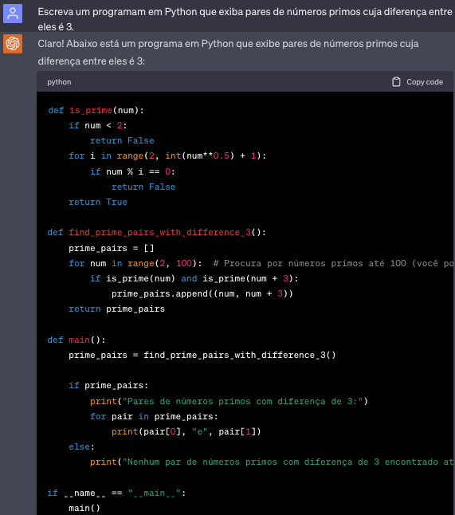
A Figura 1.11 exibe um exemplo da outra habilidade emergente que mencionamos, a estratégia CoT para resolver um problema matemático simples.
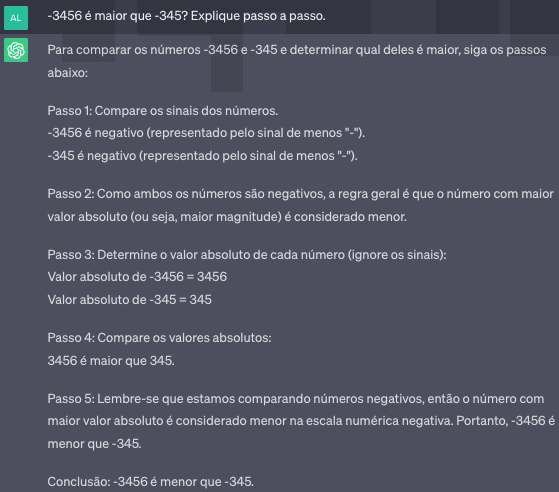
Sempre é bom ressaltar que os modelos podem apresentar comportamentos diferentes de acordo com a entrada apresentada a eles. E ainda que usar o mesmo prompt mais de uma vez não é garantia de retorno da mesma resposta, dada a natureza probabilística dos modelos gerativos. Por exemplo, considere a interação com o BARD representada na Figura 1.12, onde o objetivo era traduzir uma frase famosa do latim para o português. Ambas foram tentativas frustradas, em que ele nem se deu ao trabalho de responder em português. Mas observe o que acontece com uma instrução diferente, exibida na Figura 1.13. Embora a segunda instrução seja mais informativa, não necessariamente é este o motivo da tentativa ter sido bem sucedida. Este tipo de estratégia é chamado de hard prompt tuning ou engenharia/desenho de prompts (Liang et al., 2022; Schick; Schütze, 2021) e consiste em modificar as entradas para tentar obter saídas distintas.
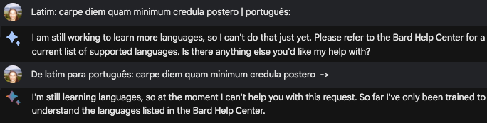
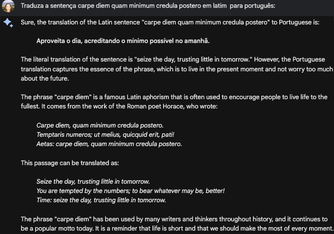
Prompts também são usados para mapear exemplos de tarefas distintas para uma entrada em linguagem natural, na tentativa de se obter uma resposta também em linguagem natural por parte do modelo. Por exemplo, suponha o exemplo a seguir, extraído do dataset de reconhecimento de emoções apresentado em (Cortiz et al., 2021):
- “o que eu acho incrível nesse filme é que o Harry Potter é a própria referência à mágica” 52
Para que exemplos como esse possam ser classificados por um modelo de linguagem autorregressivo, podemos embuti-lo na seguinte instrução:
- “o que eu acho incrível nesse filme é que o Harry Potter é a própria referência a mágica.”A emoção expressa nesta mensagem é | tristeza | raiva | admiração | confusão | curiosidade
onde o texto em azul veio do dataset (o exemplo) e o texto em vermelho é a instrução.
Mas esta é apenas uma entre muitas formas possíveis de se escrever o prompt para a tarefa de reconhecimento de emoções. Ademais, cada tarefa distinta pode ter quantidades e formatos distintos de entrada. Por exemplo, uma tarefa de inferência textual precisa incluir dois componentes, a premissa e a hipótese, ambas em azul no texto abaixo, extraídas da base de dados ASSIN-2 (Real et al., 2020):
- “Suponha a frase:”“Uma mulher está dirigindo um carro e está conversando animadamente com o carinha que está sentado ao lado dela.” Podemos inferir queA mulher e o carinha estão viajando de carro. Sim ou Não?
Existem arcabouços que podem nos ajudar na criação de prompts. Um dos mais completos é o PromptSource53, que inclui a coleção P3 (Public Pool of Prompts). O P3 é composto de mais de 2000 opções de prompts para diversas tarefas de PLN, porém tudo em inglês. Entender como os LLMs produzem as saídas de acordo com as entradas que são dadas para eles por meio de prompts é um campo de estudo recente, porém bastante ativo, desde os primeiros resultados dos LLMs (Xie et al., 2022; Xu et al., 2023).
1.4.2 Treinamento Eficiente de Modelos de Linguagem Neurais
Embora LLMs possam ser usados sem nenhum ajuste em seus pesos, eles acabam por ficar muito dependentes dos prompts e da exposição implícita que o modelo teve para uma certa tarefa durante o seu pré-treinamento. Assim, o desempenho de modelos que se baseiam apenas na habilidade emergente gerativa pode ficar bem abaixo do desempenho de um outro modelo, ainda que menor, que é ajustado para uma tarefa específica (Raffel et al., 2020). Mas como ajustar um modelo de bilhões de parâmetros de forma razoavelmente eficiente? Para responder a esta pergunta, novas abordagens sugerem que o treinamento seja feito em apenas partes dos modelos, ou com estratégias baseadas em reparametrização das matrizes de pesos.
Para o primeiro caso, podemos mencionar três estratégias:
- Soft prompt tuning, ou apenas prompt tuning (Lester et al., 2021). Neste caso, o modelo fica congelado, exceto por uma quantidade adicional de \(k\) parâmetros numéricos ajustáveis – por isso o soft – que são concatenados no início dos embeddings do texto de entrada. Esses \(k\) parâmetros serão treinados de acordo com a tarefa-alvo, usando o algoritmo clássico de retro-propagação. Observe a diferenca entre as versões hard e soft: a primeira não tem ajuste de parâmetros, se baseando apenas na troca de palavras na instrução, enquanto a segunda é diferenciável, ou seja, o prompt é composto por um conjunto de pesos ajustáveis.
- Prefix tuning (Li; Liang, 2021). Nesta estratégia, pesos ajustáveis são acrescentados no início de cada bloco dos Transformers. Observe que o modelo “original” permanece congelado, sem ajustes, assim como na abordagem de soft prompt tuning. Porém, enquanto lá pesos ajustáveis aparecem apenas no início dos embeddings de entrada, que seriam mesmo o local de inserção das instruções, aqui eles são concatenados no início de cada bloco do Transformer. Ainda, antes da concatenação, eles passam por duas camadas de redes neurais completamente conectadas, para garantir que o prefixo esteja em um mesmo espaço de representação vetorial que a entrada do bloco. Ou seja, o processo de adaptação de prefixos, teoricamente, é mais custoso que o processo de adaptação de prompts. Assim, a ordem de processamento do bloco do Transformer se torna: camada completamente conectada para processamento dos prompts -> concatenação da saída anterior com a entrada do modelo -> auto-atenção -> normalização -> camada completamente conectada do transformer -> normalização (desconsiderando as conexões residuais).
- Adaptadores (Houlsby et al., 2019). Adaptadores também acrescentam pesos ajustáveis adicionais a cada bloco do Transformer, mas não no início do bloco e sim no meio do bloco. Assim, os adaptadores são camadas de rede neural completamente conectadas, com uma função de ativação não-linear entre elas, introduzidas imediatamente antes da camada de normalização. Ou seja, a ordem de processamento se torna: auto-atenção -> adaptador -> normalização -> camada completamente conectada do Transformer -> adaptador -> normalização (desconsiderando as conexões residuais, para facilitar a comparação com os prompts).
Já as abordagens baseadas em reparametrização tem o método de adaptação baseado no posto das matrizes de peso, LoRA (do inglês, Low-Rank Adaptation) (Hu et al., 2022) como seu principal representante. A motivação principal vem de um estudo anterior, que apontou que modelos ajustados para uma nova tarefa possuem uma dimensão menor que os modelos pré-treinados (Aghajanyan et al., 2021), ou seja, que eles poderiam ser decompostos para matrizes menores sem perder informação. Dessa forma, o método aprende como decompor as matrizes de atualização dos gradientes para postos menores.
LoRA também se motiva no espaço de memória necessário para armazenar as mudanças nas matrizes de peso durante o seu treinamento. Nesta mesma direção, abordagens baseadas em quantização, que guardam os pesos de treinamento em variáveis tipadas com menos precisão, também têm sido foco de investigação recentemente54 (Dettmers et al., 2023).
Um outro ponto a ser considerado com o uso de LLMs (e até mesmo LMs) é o tamanho da entrada. Considerando que a o método de atenção tem uma complexidade de ordem quadrática, a maioria dos modelos baseados em Transformers usualmente limitam a sua entrada em cerca de 500 a 1024 tokens. Entradas maiores, em geral, precisam ser truncadas. Mesmo abordagens que consideram matrizes de atenção esparsas, como Longformer (Beltagy et al., 2020), ainda têm limitações. Abordagens recentes armazenam e recuperam camadas de decodificação ou separam entradas em pedaços de tamanho menores, possibilitando lidar com textos de tamanhos até 500 mil tokens (Bertsch et al., 2023; Ivgi et al., 2023; Wu et al., 2022).
1.4.3 Estratégias de Treinamento para Agentes de Conversação: alinhamento e feedback humano
Um modelo de linguagem não é treinado explicitamente para interagir com usuários, apenas para completar sentenças. Para criar um agente de conversação tendo como base um modelo de linguagem, é necessário incluir no modelo a habilidade de tentar responder ao usuário de acordo com a sua intenção expressa nas instruções, ou seja se alinhar ao diálogo, acompanhando a conversa. Idealmente, o agente de conversação também deve evitar respostas indevidas que poderiam levar a comportamentos nocivos.
Assim, em (Ouyang et al., 2022) os autores tinham como motivação “tornar modelos de linguagem úteis – ajudando os usuários a resolver tarefas – honestos – não inventando informação ou levando o usuário para uma falsidade – e inofensivos – não causando algum mal físico, psicológico ou social”. É menos desafiador indicar se os modelos atuais conseguem ter a primeira característica. Entretanto, as duas últimas não podemos afirmar com convicção que foram alcançadas, nem mesmo pelos modelos mais atuais.
Para tornar possível tal alinhamento entre a saída de um modelo de linguagem e a intenção do usuário, recorre-se a uma outra camada de aprendizado, o Aprendizado por Reforço com Feedback Humano, ou a partir de preferências humanas, (do inglês, Reinforcement learning from Human Feedback ou RLHF) (Christiano et al., 2017) uma abordagem que já havia se mostrado frutífera em visão computacional. O aprendizado por reforço se vale de uma função de recompensa: caso a saída seja adequada, a recompensa é positiva; caso contrário, devolve-se uma penalidade. Ou seja, se o modelo estiver devolvendo uma resposta adequada – e aqui o adequado seria a resposta que obedecesse aos três princípios acima, de utilidade, honestidade e inofensibilidade – então a recompensa seria positiva.
Acontece que definir tal valor de recompensa não é trivial e este tem sido um dos grandes desafios da área de aprendizado por reforço. Nos agentes de conversação, o que é feito, é aprender um modelo de recompensa a partir de exemplos. Pares de prompts e respostas são gerados, usualmente de forma automática pelos modelos, por questões de escala. Mas nada impede que esses pares também sejam curados em outros conjuntos de dados ou definidos por pessoas (Zhou et al., 2023). A partir daí, anotadores vão dizer quais são as suas saídas preferidas, geralmente usando mais de um modelo para ter alguma base de comparação. Então, considerando essa saída, o modelo de recompensa pode ser treinado.
Embora os agentes de conversação baseados em modelos de linguagem já estejam sendo usados para resolver problemas reais, muito ainda precisa ser alcançado. Em particular, duas limitações podem fazer com que tais modelos ainda não estejam prontos para serem adotados em larga escala e em aplicações sensíveis: (i) ainda são poucas as línguas que tais modelos conseguem lidar, se compararmos com a quantidade de línguas que temos no mundo; e (ii) ainda existe um viés social negativo embutido em tais modelos. Para ver um exemplo, considere os exemplos das Figuras 1.14 e 1.15 e perceba a diferença ao completar uma frase para o gênero masculino e feminino.
Isso no faz pensar, à medida que fechamos este capítulo, que é nossa responsabilidade como pesquisadores e desenvolvedores de tecnologia, que devemos considerar o potencial positivo e negativo dos modelos de linguagem de revolucionarem a nossa compreensão e interação com a tecnologia, e de estabelecerem novas formas de comunicação. Devemos, sim, celebrar os progressos que foram feitos, os insights que foram obtidos e as barreiras que foram rompidas. Mas à medida que a pesquisa em modelos de linguagem avança, e novas ferramentas a partir deles surgem e se tornam tão populares, precisamos ter em mente os limites que continuam a ser desafiados e a responsabilidade ao se usar e aplicar modelos cujas saídas ainda fogem da nossa compreensão. Assim, relembrando Alan Turing, mas do que nunca podemos afirmar que “We can only see a short distance ahead, but we can see plenty there that needs to be done”55, em particular se considerarmos a língua portuguesa e tantas outras milhares espalhadas no planeta que ainda carecem da nossa atenção (sem trocadilhos) e compreensão.
Neste vídeo https://www.youtube.com/watch?v=Xz_qPyizGEY&t=1s o leitor pode se informar mais sobre o uso de aprendizado de máquina em PLN.↩︎
Probabilidade condicional é a probabilidade de um evento ocorrer, dado que outro evento já ocorreu. A probabilidade condicional é representada por \(P(A|B)\), o que significa a probabilidade do evento \(A\) ocorrer, dado que o evento \(B\) já ocorreu.↩︎
Lembre que, em um modelo de linguagem probabilístico, treinar o modelo é encontrar as probabilidades por contagem.↩︎
Uma representação vetorial densa de baixa dimensionalidade, aprendida a partir de textos. Veja mais no Capítulo Representação vetorial e semântica distribucional.↩︎
Inspirado pelo nome de um dos personagens de Vila Sésamo.↩︎
Também inspirado pelo nome de um dos personagens de Vila Sésamo.↩︎
Até onde sabemos, nenhum personagem de Vila Sésamo tem esse nome.↩︎
Um vetor one-hot tem uma posição apenas igual a 1 e as demais são zero. A posição 1 se refere a exatamente um elemento.↩︎
O ELMo, assim como vários outros métodos de PLN, utiliza um tipo especial de rede recorrente chamada de Long Short-Term Memory (Hochreiter; Schmidhuber, 1997). LSTMs conseguem manipular entradas de tamanhos maiores do que redes recorrentes tradicionais, pois o que será aprendido, esquecido ou devolvido como saída é controlado durante o aprendizado por um tipo especial de rede neural chamada de gate. As redes recorrentes tradicionais diferentes das LSTMs frequentemente falham em manipular sequências longas, pois uma informação de longa distância pode se perder ao longo das várias recorrências, um problema conhecido como “gradiente que some”.↩︎
Um texto é considerado um comentário tóxico quando ele contém expressões ou intenções indesejáveis de desagrado, violência psíquica, física e emocional, crueldade, negativismo, manipulação, egoísmo etc. Veja mais sobre esse assunto no Capítulo PLN em Redes Sociais.↩︎
A função de Softmax, também conhecida como regressão logística multinomial, é definida como \(\sigma(\mathbf{z})_i = \frac{e^{z_i}}{\sum_{j=1}^{|V|} e^{z_j}}\) e tem como característica principal receber |V| valores reais e convertê-los para uma distribuição de probabilidade de |V| saídas possíveis, onde |V| é o tamanho do vocabulário.↩︎
Por exemplo, usando o TensorFlow: https://tfhub.dev/google/elmo/2.↩︎
Alguns consideram que o mecanismo de atenção é uma forma de explicação, enquanto outros discordam veementemente disso. Veja as discussões: (Bibal et al., 2022; Jain; Wallace, 2019; Wiegreffe; Pinter, 2019).↩︎
https://openai.com/blog/introducing-chatgpt-and-whisper-apis↩︎
Para manter as letras clássicas que referenciam os vetores, vamos manter os nomes em inglês.↩︎
A explicação no artigo é que 8 é a raiz quadrada da dimensão dos vetores de keys, que no artigo é 64. Essa divisão é uma espécie de normalização, para deixar os cálculos dos gradientes mais estáveis. Outros valores poderiam ser usados, especialmente com vetores de outras dimensões.↩︎
No artigo original, foi definido o valor de 10.000.↩︎
Para quem quiser entender a derivação do porquê essas funções fazem sentido para representar a informação de posição, podem debruçar nesta detalhada explicação: https://timodenk.com/blog/linear-relationships-in-the-transformers-positional-encoding/ ou para uma ideia mais geral, aqui: https://kazemnejad.com/blog/transformer_architecture_positional_encoding/.↩︎
O algoritmo backpropagation é o mais utilizado para aprender os pesos de uma rede neural, usando o método de otimização de gradiente descendentes visando minimizar o erro do modelo. Veja mais detalhes em https://www.deeplearningbook.com.br/algoritmo-backpropagation-parte-2-treinamento-de-redes-neurais/.↩︎
Veja mais em https://sebastianraschka.com/blog/2023/self-attention-from-scratch.html.↩︎
Neste contexto, logits são basicamente logaritmos de probabilidades não normalizados.↩︎
Também é uma brincadeira com um personagem do famoso desenho infantil Sesame Street, no ar desde 1969, e que no Brasil ganhou uma versão chamada Vila Sésamo.↩︎
Uma brincadeira com o berimbau.↩︎
https://huggingface.co/neuralmind/bert-base-portuguese-cased↩︎
https://huggingface.co/melll-uff/bertweetbr e https://huggingface.co/pablocosta/bertabaporu-base-uncased, por exemplo↩︎
Um prompt é um texto em linguagem natural (em oposição à linguagem de programação) que especifica uma instrução do que deve ser feito. Um prompt pode ser formulado como uma pergunta, uma observação, um questionamento, ou ainda representar uma tarefa específica, por exemplo, classificar um texto. Prompts podem ter um formato livre, mas modelos de linguagem são bastante sensíveis ao conteúdo textual dele. Afinal, modelos como GPT estão completando um texto (neste caso, o prompt), condicionados ao que tem neste texto.↩︎
Note que chamamos de exemplo, mas para quem está acostumado com aprendizado de máquina, este não seria um exemplo para ajustar os parâmetros do modelo. Seria apenas um exemplo mesmo.↩︎
Estamos usando exemplos em português, mas na época, as habilidades do modelo em lidar com várias línguas não foi demonstrada no artigo. Mas mencionou-se que no treinamento do GPT-2, os textos foram filtrados para que ficassem apenas aqueles em inglês. Para o GPT-3, esse requerimento foi relaxado e 7% dos textos estavam em outras línguas.↩︎
A notação de Big O descreve complexidade de um código em termos algébricos (Cormen et al., 2001; Knuth, 1997).↩︎
Afinal, além de Sesame Street, também gostamos dos Simpsons.↩︎
O teste Cloze, segundo o dicionário Cambridge, consiste em um texto com algumas palavras removidas, e o leitor deve preencher tais palavras faltantes com algo que faça sentido. Ele foi proposto para medir o nível de leiturabilidade de um indivíduo.↩︎
Em tradução livre, a sentença original é “Apressa-te a viver bem e pensa que cada dia é, por si só, uma vida”.↩︎
Veja mais sobre Avaliação de sistemas de PLN no Capítulo Avaliação de tecnologias de linguagem.↩︎
Veja um catálogo em https://amatriain.net/blog/transformer-models-an-introduction-and-catalog-2d1e9039f376/.↩︎
Neste vídeo https://www.youtube.com/watch?v=prJrQ8XL-AY&t=9s o leitor encontra mais detalhes sobre a adaptação de modelos de linguagem para o português.↩︎
https://github.com/diogocortiz/PortugueseEmotionRecognitionWeakSupervision/blob/main/README.md↩︎
Tradução nossa: Somos capazes de ver apenas uma curta distância à frente, mas já podemos ver que muito ainda precisa ser feito.↩︎